Learning Objectives After completing this chapter, you should be able to:
Compute the sinusoidal steady-state output of a stable LTI system from \(G(j\omega)\).
Convert between magnitude ratios and decibels, and use decades and octaves correctly.
Sketch asymptotic Bode magnitude and phase plots from first-order and second-order building blocks.
Read gain margin, phase margin, crossover frequencies, and bandwidth from a Bode plot.
Translate time-domain specifications (overshoot, settling time, steady-state error) into frequency-domain targets (PM, \(\omega_{gc}\), \(K_v\)).
Design lead, lag, and lag–lead compensators using the systematic Bode-plot procedure.
Verify frequency-domain designs in MATLAB using margin(), bode(), and step response simulation.
Frequency-domain methods show how a system treats slow, medium, and fast signals. That viewpoint is one of the most useful ways to understand feedback.
In practice, signals and disturbances span a wide range of frequencies: a temperature sensor carries high-frequency noise, a vehicle sees low-frequency road undulations and higher-frequency vibration, and a motor drive contains periodic ripple from power electronics. Frequency-domain analysis asks: how does the system respond at each frequency?
Good tracking of slowly varying references requires large loop gain at low frequencies, while high-frequency sensor noise should not be amplified, so the loop gain must be small at high frequencies. Between these two extremes lies the crossover region, where gain and phase margins indicate how much modelling error the closed loop can tolerate before instability. The frequency-domain viewpoint makes all of these trade-offs visible on a single diagram.
Frequency-domain methods do not replace time-domain methods. They provide a different view of the same dynamics. Good control design usually requires both views.
Consider a stable continuous-time LTI system with transfer function \(G(s)\). If the input is a sinusoid \[u(t)=A\sin(\omega t),\] then, after transients have died away, the output settles to a sinusoid of the same frequency \(\omega\), but generally with a different amplitude and a phase shift: \[y_{\mathrm{ss}}(t)=A\,|G(j\omega)|\sin\!\bigl(\omega t+\angle G(j\omega)\bigr).\]
To see why, consider the simplest possible stable system, \[G(s)=\frac{1}{s+a}, \qquad a>0.\] The Laplace transform of \(u(t)=A\sin(\omega t)\) is \(U(s)=A\omega/(s^2+\omega^2)\), so \[Y(s)=G(s)\,U(s)=\frac{A\omega}{(s+a)(s^2+\omega^2)}.\] Expanding in partial fractions: \[Y(s)=\frac{c_1}{s+a}+\frac{Bs+C}{s^2+\omega^2}.\] Setting \(s=-a\) gives \(c_1=A\omega/(a^2+\omega^2)\). Comparing coefficients of \(s^2\) and \(s^0\) yields \[B=-\frac{A\omega}{a^2+\omega^2}, \qquad C=\frac{A\omega\,a}{a^2+\omega^2}.\] The first term inverts to \(c_1\,e^{-at}\), which decays to zero because \(a>0\). The second term inverts using the standard pairs \(\mathcal{L}^{-1}\{s/(s^2+\omega^2)\}=\cos\omega t\) and \(\mathcal{L}^{-1}\{\omega/(s^2+\omega^2)\}=\sin\omega t\): \[y_{\mathrm{ss}}(t) =B\cos\omega t+\frac{C}{\omega}\sin\omega t =\frac{A}{a^2+\omega^2}\bigl(a\sin\omega t-\omega\cos\omega t\bigr).\] The expression in brackets is a sum of a sine and a cosine at the same frequency. Any such combination can be written as a single sinusoid using the identity \[\alpha\sin\theta-\beta\cos\theta = \sqrt{\alpha^2+\beta^2}\;\sin\!\bigl(\theta-\tan^{-1}(\beta/\alpha)\bigr).\] With \(\alpha=a\) and \(\beta=\omega\): \[y_{\mathrm{ss}}(t) =\frac{A}{\cancel{a^2+\omega^2}}\cdot\sqrt{\cancel{a^2+\omega^2}}\;\sin\!\bigl(\omega t-\tan^{-1}(\omega/a)\bigr) =\frac{A}{\sqrt{a^2+\omega^2}}\;\sin\!\bigl(\omega t-\tan^{-1}(\omega/a)\bigr).\] Recognising that \(|G(j\omega)|=1/\sqrt{a^2+\omega^2}\) and \(\angle G(j\omega)=-\tan^{-1}(\omega/a)\), this is \[\boxed{y_{\mathrm{ss}}(t)=A\,|G(j\omega)|\sin\bigl(\omega t+\angle G(j\omega)\bigr).}\] The same argument extends to any stable rational transfer function: every pole of \(G(s)\) in the left half-plane produces a decaying transient, and the only terms that persist come from the input poles at \(s=\pm j\omega\).
Sinusoidal steady-state rule For a stable LTI system, a sinusoidal input produces a sinusoidal output at the same frequency. The system changes only the amplitude (by the factor \(|G(j\omega)|\)) and the phase (by the angle \(\angle G(j\omega)\)). The function \(G(j\omega)\) is called the freq response of the system.
Consider \[G(s)=\frac{1}{s+1}.\] At frequency \(\omega\), \[G(j\omega)=\frac{1}{1+j\omega}, \qquad |G(j\omega)|=\frac{1}{\sqrt{1+\omega^2}}, \qquad \angle G(j\omega)=-\tan^{-1}(\omega).\] If \(u(t)=2\sin(3t)\), then \(A=2\) and \(\omega=3\). We compute \[|G(j3)|=\frac{1}{\sqrt{10}}\approx 0.316, \qquad \angle G(j3)=-\tan^{-1}(3)\approx -71.6^\circ.\] The steady-state output is therefore \[y_{\mathrm{ss}}(t)=2\times 0.316\,\sin(3t-71.6^\circ)=0.632\sin(3t-71.6^\circ).\] The amplitude has been reduced to about one-third of the input, and the output lags behind by nearly a quarter period. This is the filtering action of the first-order low-pass system. Listing [lst:matlab-sss-check] shows how to verify this in MATLAB.
MATLAB code for checking sinusoidal steady-state response.
import numpy as np
import control as ctrl
import numpy as np
s = ctrl.tf('s')
G = 1/(s+1)
w = 3
resp = ctrl.frequency_response(G, [w])
mag = np.abs(resp.fresp[0, 0, 0]) # magnitude ratio (linear)
phase = np.degrees(np.angle(resp.fresp[0, 0, 0])) # phase in degrees
print("Amplitude = %.3f, Phase = %.1f deg" % (2*mag, phase))s = tf('s');
G = 1/(s+1);
w = 3;
[mag, phase] = bode(G, w);
mag = squeeze(mag); % magnitude ratio
phase = squeeze(phase); % phase in degrees
fprintf('Amplitude = %.3f, Phase = %.1f deg\n', 2*mag, phase)Consider \[G(s)=\frac{100}{s^2+2s+100},\] which has \(\omega_n=10\) rad/s and \(\zeta=0.1\). At the natural frequency, \[G(j10)=\frac{100}{(j10)^2+2(j10)+100}=\frac{100}{-100+j20+100}=\frac{100}{j20}=-j5.\] Hence \(|G(j10)|=5\) and \(\angle G(j10)=-90^\circ\). Although the DC gain of the system is equal to 1, a unit-amplitude sinusoid at \(\omega=10\) rad/s produces a steady-state output with amplitude \(5\) — the system amplifies inputs near its resonant frequency. This resonance amplification is one of the most important features that Bode plots reveal.
Conceptually, a frequency response plot is produced by applying many separate sinusoidal inputs, one frequency at a time, and recording the steady-state response.
For a stable LTI system, the experiment at each test frequency \(\omega\) is: \[u(t)=A\sin(\omega t) \quad \Longrightarrow \quad y_{\mathrm{ss}}(t)=B(\omega)\sin(\omega t+\phi(\omega)).\] We then record the gain and phase: \[|G(j\omega)|=\frac{B(\omega)}{A}, \qquad \angle G(j\omega)=\phi(\omega).\] Repeating this at many frequencies gives a table of magnitude and phase values. Plotting the magnitude (in dB) and phase (in degrees) against frequency gives the bode plot.
Suppose a first-order system \(G(s)=1/(s+1)\) is tested using sinusoidal inputs of amplitude \(A=1\). The measured steady-state output amplitudes and phase shifts are: \[\begin{array}{c|ccccc} \omega~(\mathrm{rad/s}) & 0.1 & 0.3 & 1 & 3 & 10\\ \hline B(\omega) & 0.995 & 0.958 & 0.707 & 0.316 & 0.100\\ \phi(\omega) & -5.7^\circ & -16.7^\circ & -45^\circ & -71.6^\circ & -84.3^\circ \end{array}\] The Bode magnitude values are not the amplitudes directly. They are the amplitudes converted to dB: \[20\log_{10}B(\omega).\] For example, at \(\omega=3\) rad/s, \[20\log_{10}(0.316)\approx -10~\mathrm{dB}.\] At \(\omega=1\) rad/s the magnitude is \(-3\) dB and the phase is \(-45^\circ\). This frequency is the break frequency (or corner frequency) of the first-order system, and it marks the boundary between the low-frequency pass-band and the high-frequency roll-off.
Figure 1.1 summarises the entire process: test the system at one frequency, record the steady-state gain and phase, then repeat at many frequencies to build the Bode plot.
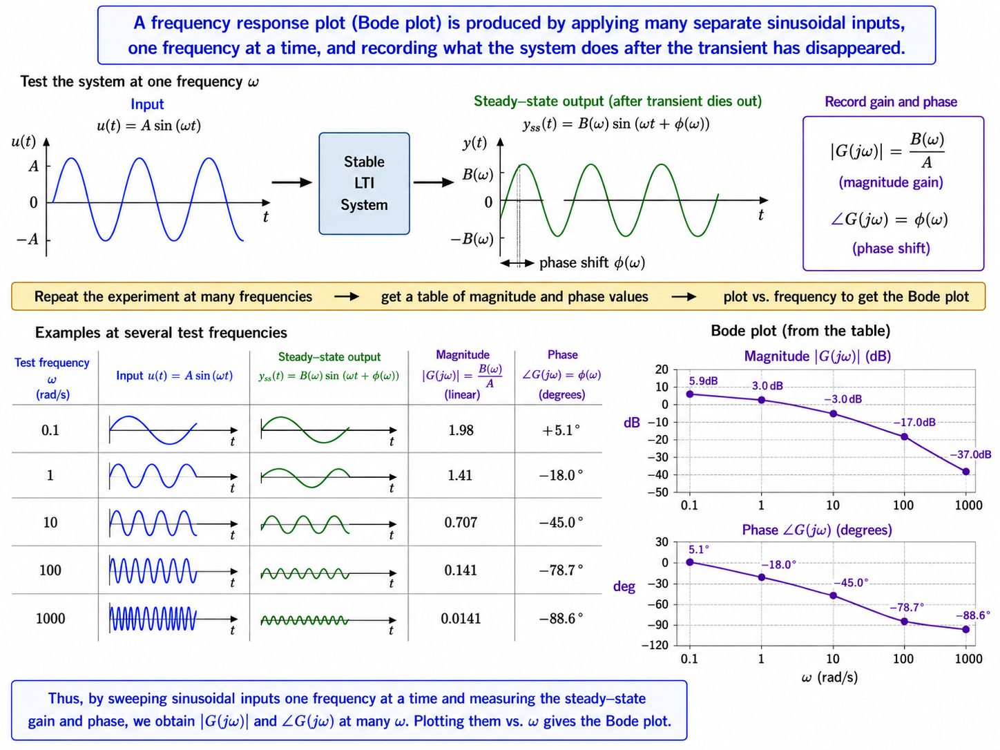
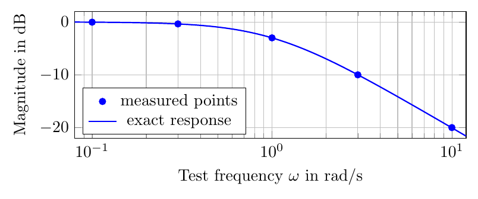
Figure 1.2 shows the resulting Bode plot built from these five measured points together with the exact analytical curve. This experimental view is important. When MATLAB draws bode(G), it is doing the same idea analytically: it evaluates \(G(j\omega)\) at many frequencies and plots the resulting magnitude and phase.
Frequency responses often cover several orders of magnitude, so a linear frequency axis would either waste space at low frequencies or compress the high-frequency behaviour. Bode plots use a logarithmic frequency axis.
A decade is a factor of \(10\) in frequency. Moving from \(1\) rad/s to \(10\) rad/s is one decade; moving from \(10\) rad/s to \(1000\) rad/s is two decades.
An octave is a factor of \(2\) in frequency. Moving from \(5\) rad/s to \(10\) rad/s is one octave.
Slopes in Bode magnitude plots are often described in dB/decade or dB/octave. A first-order pole contributes \(-20\) dB/decade after its break frequency. Since one decade is about \(3.32\) octaves, this is equivalently \(-6\) dB/octave.
In a Bode magnitude plot, the transfer-function magnitude is an amplitude ratio: \[M = |G(j\omega)|=\frac{\text{output amplitude}}{\text{input amplitude}}.\]
This amplitude ratio is usually expressed in decibel units as \[M_{\mathrm{dB}} = 20\log_{10}M.\]
Thus: \[M=1 \quad \Longrightarrow \quad 0\text{ dB},\] \[M=10 \quad \Longrightarrow \quad 20\text{ dB},\] and \[M=0.1 \quad \Longrightarrow \quad -20\text{ dB}.\]
The factor \(20\) appears because power is proportional to amplitude squared. The original decibel definition for power ratios uses \[10\log_{10}\left(\frac{P_2}{P_1}\right).\] If \(P\propto A^2\), then an amplitude ratio \(M\) corresponds to a power ratio \(M^2\), so \[10\log_{10}(M^2)=20\log_{10}M.\]
Some useful conversions worth remembering: \[\begin{array}{c|ccccccc} M & 0.01 & 0.1 & 0.5 & 1 & 2 & 10 & 100\\ \hline M_{\mathrm{dB}} & -40 & -20 & -6 & 0 & +6 & +20 & +40 \end{array}\]
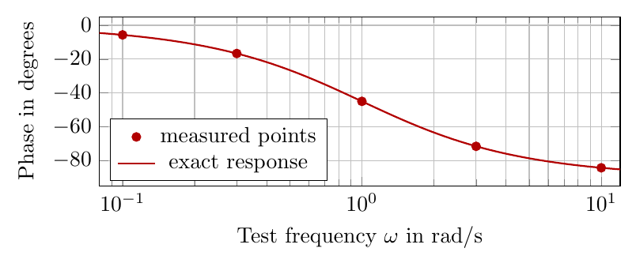
A Bode plot consists of two panels drawn on the same logarithmic frequency axis. The upper panel shows the magnitude \(20\log_{10}|G(j\omega)|\) in decibels. The lower panel shows the phase \(\angle G(j\omega)\) in degrees.
To read the magnitude plot, choose a frequency on the horizontal axis and move vertically to the curve. A value of \(0\) dB means the output sinusoid has the same amplitude as the input sinusoid. A value of \(+20\) dB means the output amplitude is \(10\) times larger. A value of \(-20\) dB means the output amplitude is \(10\) times smaller. Figure 1.3 shows a typical example: the magnitude of a first-order low-pass system plotted on a semi-log frequency axis, together with its straight-line asymptotic approximation.
To read the phase plot, use the same frequency and read the phase angle. A phase of \(-90^\circ\) means the output sinusoid lags the input by one quarter of a period. The time lag corresponding to a phase angle \(\phi\) (in degrees, negative for lag) at frequency \(\omega\) is \[\Delta t = \frac{|\phi|}{360^\circ}\cdot\frac{2\pi}{\omega}.\] The same phase angle corresponds to a different time lag at a different frequency.
Suppose a Bode plot gives \(|G(j5)|_{\mathrm{dB}}=-6~\mathrm{dB}\) and \(\angle G(j5)=-60^\circ\). The amplitude ratio is \[|G(j5)|=10^{-6/20}\approx 0.50.\] Thus an input \(u(t)=4\sin(5t)\) gives the steady-state output \[y_{\mathrm{ss}}(t)\approx 4\times 0.50\,\sin(5t-60^\circ)=2\sin(5t-60^\circ).\] The time delay at this frequency is \[\Delta t = \frac{60}{360}\cdot\frac{2\pi}{5}\approx 0.209~\text{s}.\]
Figure 1.4 summarises this four-step procedure visually: locate the input frequency on the horizontal axis, read the magnitude and phase from the two panels, then construct the steady-state output.
The exact Bode plot is obtained by evaluating \(G(j\omega)\) directly at every frequency — MATLAB does this. The asymptotic Bode plot is a hand-sketch approximation built from straight-line magnitude segments and approximate phase transitions. Its purpose is to reveal the structure of the transfer function quickly: where the break frequencies are, what the slopes are, and roughly what the margins look like. After drawing the asymptotic sketch, always check the exact response near break frequencies and lightly damped second-order modes where the approximation can be poor.
Before drawing a Bode plot, write the transfer function using factors of the form \[1+\frac{s}{a}, \qquad 1+2\zeta\frac{s}{\omega_n}+\left(\frac{s}{\omega_n}\right)^2, \qquad s.\] The constants \(a\) and \(\omega_n\) are the break frequencies. This conversion is essential because the Bode sketch is drawn from the break frequencies, and each factor contributes independently to the overall magnitude and phase.
Consider \[G(s)=\frac{5(s+2)}{s(s+10)(s+50)}.\] Convert each polynomial factor by extracting the constant: \[s+2=2\!\left(1+\frac{s}{2}\right),\quad s+10=10\!\left(1+\frac{s}{10}\right),\quad s+50=50\!\left(1+\frac{s}{50}\right).\] Therefore \[G(s) = \frac{5\cdot 2}{10\cdot 50}\cdot \frac{1+s/2}{s\,(1+s/10)(1+s/50)} = 0.02\,\frac{1+s/2}{s\,(1+s/10)(1+s/50)}.\] The Bode-form gain is \(K_B=0.02\), giving a low-frequency starting magnitude of \(20\log_{10}(0.02)=-34\) dB (before accounting for the integrator slope). The zero break frequency is \(2\) rad/s, and the pole break frequencies are \(10\) and \(50\) rad/s.
Common Bode-form mistake A common mistake is to sketch from \(s+10\) as if the gain were \(1\). The factor \(s+10\) contains the constant \(10\), and ignoring it shifts the entire magnitude plot by \(20\) dB. Always extract the constant from every factor before sketching.
Multiplication of transfer functions becomes addition in logarithmic magnitude, so complicated Bode plots are obtained by adding the dB magnitudes and phases of simple factors: \[20\log_{10}|G_1(j\omega)\,G_2(j\omega)| =20\log_{10}|G_1(j\omega)|+20\log_{10}|G_2(j\omega)|.\] Every rational transfer function is a product of a few standard building blocks.
For \(G(s)=K\), the magnitude is \(20\log_{10}|K|\) dB at all frequencies. If \(K>0\), the phase is \(0^\circ\). If \(K<0\), the phase is \(-180^\circ\).
For an integrator \(G(s)=1/s\), we have \(G(j\omega)=1/(j\omega)\), so \[20\log_{10}|G(j\omega)|=-20\log_{10}\omega, \qquad \angle G(j\omega)=-90^\circ.\] The magnitude is a straight line with slope \(-20\) dB/decade passing through \(0\) dB at \(\omega=1\) rad/s. The phase is a constant \(-90^\circ\) at all frequencies.
For a differentiator \(G(s)=s\), the magnitude slope is \(+20\) dB/decade and the phase is \(+90^\circ\) (Figure 1.5). Each additional integrator or differentiator adds another \(\pm 20\) dB/decade to the slope and another \(\pm 90^\circ\) to the phase.
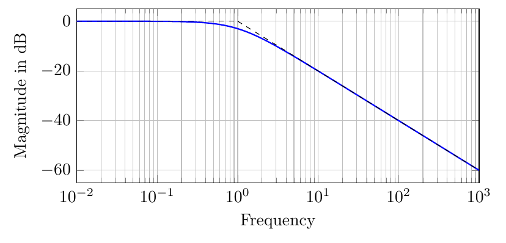
A first-order pole in Bode form is \[G_p(s)=\frac{1}{1+s/a}.\] The break frequency is \(a\). Its exact frequency response is \[G_p(j\omega)=\frac{1}{1+j\omega/a},\] giving \[20\log_{10}|G_p(j\omega)| =-10\log_{10}\!\left(1+\left(\frac{\omega}{a}\right)^2\right), \qquad \angle G_p(j\omega)=-\tan^{-1}\!\left(\frac{\omega}{a}\right).\]
The asymptotic magnitude approximation is straightforward: the magnitude is \(0\) dB for \(\omega \ll a\) (the factor has not yet “turned on”), and it drops at \(-20\) dB/decade for \(\omega \gg a\). The transition between these two regimes happens at the break frequency \(\omega = a\), where the exact magnitude is \(-3\) dB while the asymptote still reads \(0\) dB. This \(3\) dB error at the corner is the largest discrepancy between the exact and asymptotic curves.
The phase transitions more gradually. A useful hand-sketch rule places the phase at \(0^\circ\) until one decade below the break frequency (\(0.1a\)), draws a straight line from \(0^\circ\) to \(-90^\circ\) between \(0.1a\) and \(10a\), and holds \(-90^\circ\) after \(10a\). The exact phase at the break frequency itself is \(-45^\circ\). Figure 1.6 illustrates both the magnitude and phase plots for a pole at \(a=10\) rad/s, showing how the asymptotic straight-line approximation compares with the exact curves.
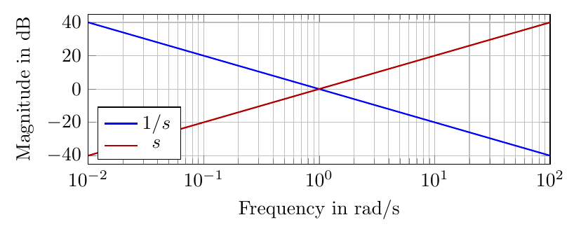
A first-order zero in Bode form is \(G_z(s)=1+s/a\). Its magnitude and phase are the mirror images of the first-order pole: \[20\log_{10}|G_z(j\omega)| =10\log_{10}\!\left(1+\left(\frac{\omega}{a}\right)^2\right), \qquad \angle G_z(j\omega)=+\tan^{-1}\!\left(\frac{\omega}{a}\right).\] The asymptotic magnitude is \(0\) dB before the break frequency and \(+20\) dB/decade after it. The phase rises from \(0^\circ\) to \(+90^\circ\) between \(0.1a\) and \(10a\). Figure 1.7 confirms the mirror-image relationship with the first-order pole.
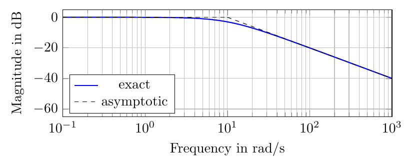
A standard second-order pole pair is written as \[G_{2p}(s)= \frac{1}{1+2\zeta(s/\omega_n)+(s/\omega_n)^2}.\] The break frequency is the natural frequency \(\omega_n\). The exact magnitude is \[20\log_{10}|G_{2p}(j\omega)| = -10\log_{10} \!\left[ \left(1-\left(\frac{\omega}{\omega_n}\right)^{\!2}\right)^{\!2} + \left(2\zeta\frac{\omega}{\omega_n}\right)^{\!2} \right].\]
The asymptotic magnitude is \(0\) dB for \(\omega<\omega_n\) and drops at \(-40\) dB/decade for \(\omega>\omega_n\). The phase moves from \(0^\circ\) to \(-180^\circ\), passing through \(-90^\circ\) at \(\omega_n\).
The critical feature is the resonant peak. When the damping ratio \(\zeta\) is small, the exact magnitude can rise well above \(0\) dB near \(\omega_n\). The peak magnitude is approximately \(1/(2\zeta)\), or \(-20\log_{10}(2\zeta)\) dB. For example, \(\zeta=0.1\) gives a peak of about \(14\) dB. The asymptotic plot does not show this peak, so the exact response must always be checked for lightly damped systems. Figure 1.8 shows an example with \(\zeta=0.4\), where a moderate peak is visible near \(\omega_n\).
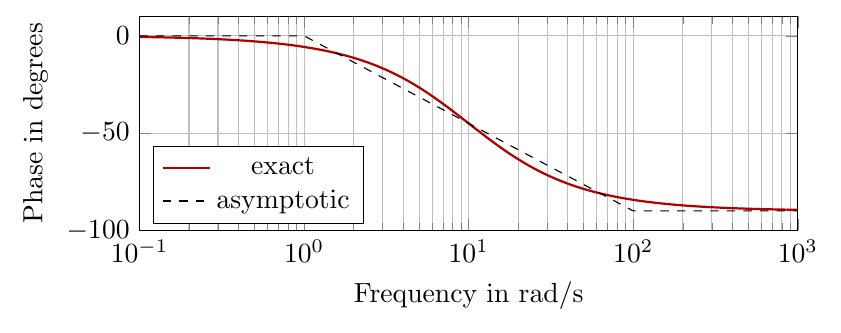
Figure 1.9 shows how both the magnitude and phase change as \(\zeta\) varies from \(0.05\) to \(1.0\). Two trends are immediately visible. First, the resonant peak grows dramatically as \(\zeta\) decreases: at \(\zeta=0.05\) the peak is about \(20\) dB, while at \(\zeta=0.7\) it has essentially disappeared. Second, the phase transition near \(\omega_n\) becomes increasingly abrupt for small \(\zeta\) — at \(\zeta=0.05\) the phase drops almost vertically through \(-90^\circ\), whereas at \(\zeta=1.0\) the transition is gradual and spread over several decades. In all cases, the asymptotic approximation (dashed black) ignores these damping-dependent effects entirely.
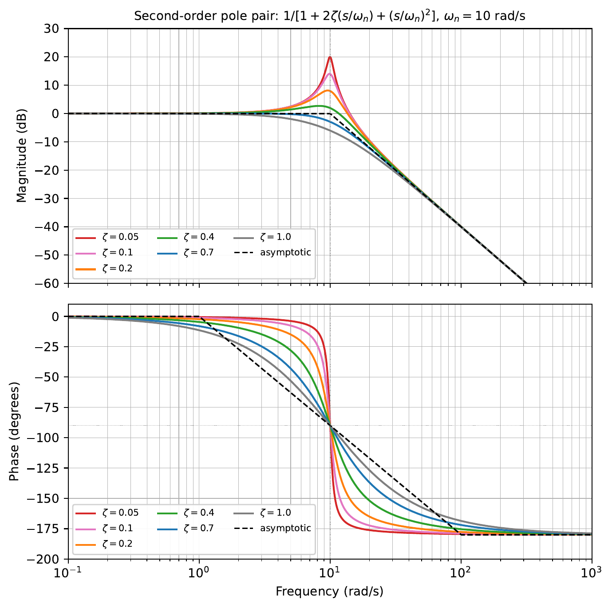
A second-order zero pair \(G_{2z}(s)=1+2\zeta(s/\omega_n)+(s/\omega_n)^2\) has the opposite frequency-response characteristics of a second-order pole pair: its magnitude and phase contributions are equal in size but opposite in sign. The asymptotic magnitude is \(0\) dB before \(\omega_n\) and \(+40\) dB/decade after \(\omega_n\). The phase moves from \(0^\circ\) to \(+180^\circ\). If the damping is light, there is a notch (dip) instead of a peak near \(\omega_n\). Figure 1.10 shows the magnitude plot for this case.
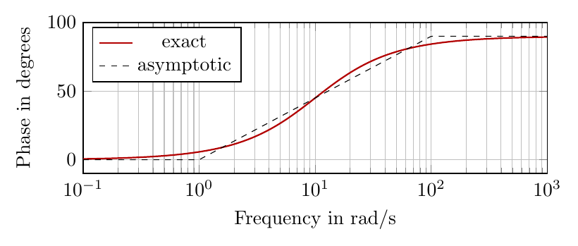
Figure 1.11 shows the mirror-image behaviour across a range of damping ratios: the notch deepens and the phase transition sharpens as \(\zeta\) decreases, exactly the inverse of the pole pair.
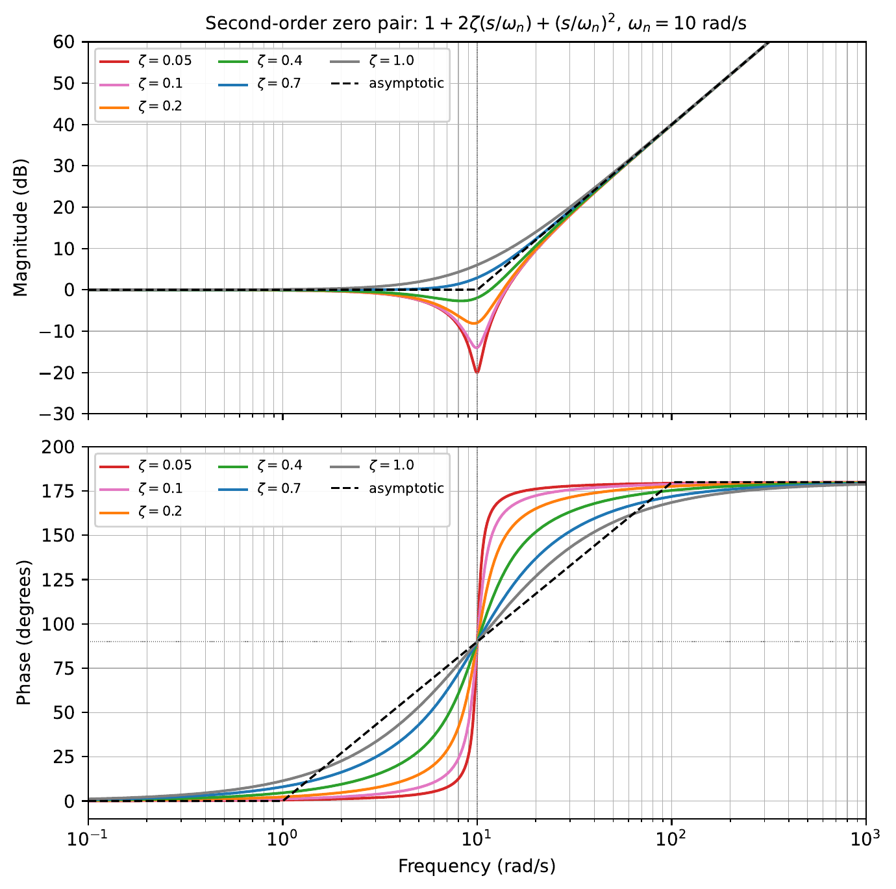
Listing [lst:matlab-standard-bode-factors] shows how to generate the exact Bode plots for all four standard factors in MATLAB.
MATLAB code for exact Bode plots of the standard factors.
import matplotlib.pyplot as plt
import control as ctrl
a = 10
wn = 10
zeta = 0.4
# Use standard polynomial form: num=[...], den=[...] (highest power first)
Gp1 = ctrl.tf([a], [1, a]) # a/(s+a) = 1/(1+s/a)
Gz1 = ctrl.tf([1, a], [a]) # (s+a)/a = 1+s/a
Gp2 = ctrl.tf([wn**2], [1, 2*zeta*wn, wn**2]) # wn^2/(s^2+2*z*wn*s+wn^2)
Gz2 = ctrl.tf([1, 2*zeta*wn, wn**2], [wn**2]) # (s^2+2*z*wn*s+wn^2)/wn^2
ctrl.bode_plot([Gp1, Gz1, Gp2, Gz2])
plt.legend(['1st-order pole','1st-order zero',
'2nd-order pole pair','2nd-order zero pair'])s = tf('s');
a = 10;
wn = 10;
zeta = 0.4;
Gp1 = 1/(1+s/a); % first-order pole
Gz1 = 1+s/a; % first-order zero
Gp2 = 1/(1+2*zeta*(s/wn)+(s/wn)^2); % second-order pole pair
Gz2 = 1+2*zeta*(s/wn)+(s/wn)^2; % second-order zero pair
figure
bode(Gp1, Gz1, Gp2, Gz2), grid on
legend('1st-order pole','1st-order zero', ...
'2nd-order pole pair','2nd-order zero pair')The practical hand-sketch procedure is as follows.
Convert the transfer function into Bode form.
Mark every break frequency on the logarithmic axis.
Start the magnitude at the low-frequency value, including the constant gain and any poles or zeros at the origin.
Move from left to right. At each first-order zero, add \(+20\) dB/decade to the slope. At each first-order pole, add \(-20\) dB/decade. At each second-order zero, add \(+40\) dB/decade. At each second-order pole, add \(-40\) dB/decade.
Sketch the phase by adding the phase contributions of all factors.
Compare the final hand sketch with the exact Bode plot from MATLAB.
Complete asymptotic Bode sketch Consider \[G(s)=\frac{100(1+s/2)}{s(1+s/10)(1+s/50)}.\]
Step 1: Identify the components. The Bode-form gain is \(K_B=100\) (\(40\) dB). The factors are:
| Factor | Type | Break frequency |
|---|---|---|
| \(K_B=100\) | constant gain | — |
| \(1/s\) | integrator | — |
| \(1+s/2\) | zero | \(2\) rad/s |
| \(1/(1+s/10)\) | pole | \(10\) rad/s |
| \(1/(1+s/50)\) | pole | \(50\) rad/s |
Step 2: Determine the slope in each frequency range. Starting from the integrator slope of \(-20\) dB/decade: \[\begin{array}{c|ccl} \text{Range} & \text{Slope change} & \text{Net slope} & \text{Reason}\\ \hline \omega<2 & --- & -20~\mathrm{dB/dec} & \text{integrator only}\\ 2<\omega<10 & +20 & 0~\mathrm{dB/dec} & \text{zero at 2 cancels slope}\\ 10<\omega<50 & -20 & -20~\mathrm{dB/dec} & \text{pole at 10}\\ \omega>50 & -20 & -40~\mathrm{dB/dec} & \text{pole at 50} \end{array}\]
Step 3: Fix the vertical position. At \(\omega=1\) rad/s (before any break frequency), the magnitude is \[20\log_{10}\!\left(\frac{100}{1}\right) = 40~\text{dB}.\] From this anchor point, we draw the asymptotic segments with the slopes determined above.
Step 4: Sketch the phase. The integrator contributes \(-90^\circ\) at all frequencies. The zero at \(2\) adds positive phase between \(0.2\) and \(20\) rad/s. The poles at \(10\) and \(50\) each subtract phase in their respective transition bands. The total phase starts near \(-90^\circ\) and eventually approaches \(-180^\circ\) at high frequencies. Figure 1.12 compares the resulting asymptotic sketch with the exact Bode plot, and Figure 1.13 shows the individual factor contributions that build up the cumulative asymptote.
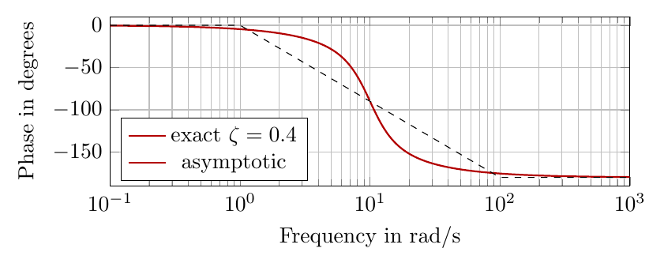
Figure 1.13 shows how each individual factor contributes its own asymptotic magnitude and phase segment, and how these are summed to produce the cumulative asymptotic Bode plot. Comparing the cumulative asymptote (dashed black) with the exact response confirms that the hand-sketch procedure captures the essential shape of the frequency response.
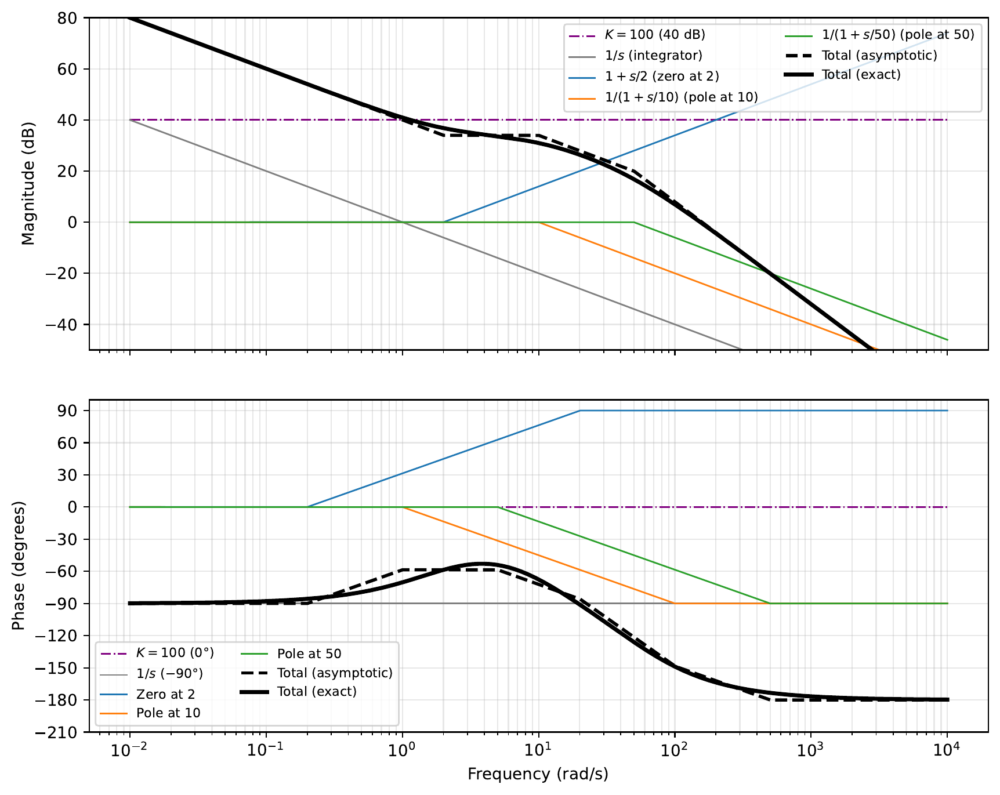
The exact Bode plot can be verified with Listing [lst:matlab-bode-complex-example].
MATLAB code for the exact Bode plot of the complete example.
import matplotlib.pyplot as plt
import control as ctrl
s = ctrl.tf('s')
G = 100*(1+s/2)/(s*(1+s/10)*(1+s/50))
ctrl.bode_plot(G), plt.grid(True)s = tf('s');
G = 100*(1+s/2)/(s*(1+s/10)*(1+s/50));
bode(G), grid onConsider \[G(s)=\frac{50(s+3)}{s(s+1)(s^2+4s+100)}.\] To sketch by hand, first convert to Bode form. The numerator factor is \(s+3=3(1+s/3)\). The denominator quadratic is \(s^2+4s+100=100(1+0.4\cdot s/10+(s/10)^2)\), giving \(\omega_n=10\) and \(\zeta=0.2\). The denominator constants are \(1\) (from \(s+1\)) and \(100\) (from the quadratic), so the Bode-form gain is \(K_B=50\cdot 3/(1\cdot 100)=1.5\), or \(3.5\) dB.
The slope pattern is: \(-20\) dB/dec (integrator) up to \(\omega=1\), then \(-40\) dB/dec (pole at 1), then \(-20\) dB/dec (zero at 3), then \(-60\) dB/dec (second-order poles at 10). The lightly damped poles at \(\omega_n=10\) will produce a resonant peak that the asymptotic sketch misses.
Figure 1.14 shows each factor’s individual contribution (coloured curves) together with the cumulative asymptotic and exact Bode plots (black dashed and solid). The resonant peak near \(\omega_n=10\) rad/s in the exact total is clearly absent from the asymptotic total, illustrating why the exact plot must always be checked for lightly damped modes. Listing [lst:matlab-complex-bode] reproduces the exact plot and computes the stability margins.
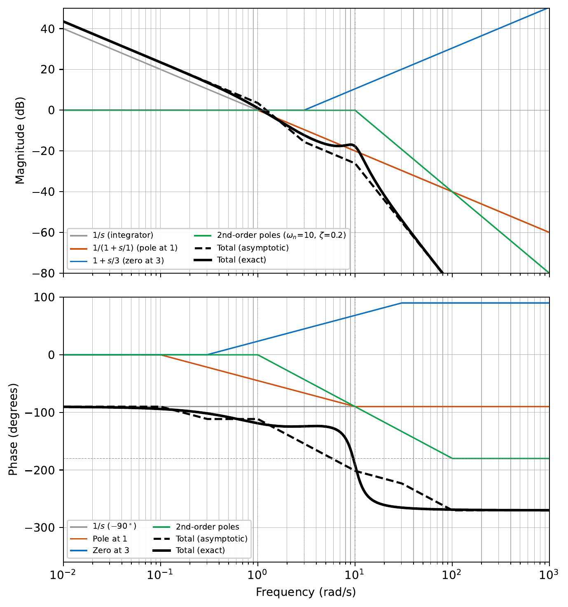
MATLAB code for a higher-order Bode plot with stability margins.
import matplotlib.pyplot as plt
import control as ctrl
import numpy as np
num = [50, 150] # 50*(s+3) = 50s + 150
den = np.convolve([1, 0], [1, 1]) # s*(s+1)
den = np.convolve(den, [1, 4, 100]) # * (s^2+4s+100)
G = ctrl.tf(num, den)
ctrl.bode_plot(G, margins=True)
plt.grid(True)
Gm, Pm, Wcg, Wcp = ctrl.margin(G)
print("Gain margin = %.1f dB, Phase margin = %.1f deg" % (20*np.log10(Gm), Pm))s = tf('s');
G = 50*(s+3)/(s*(s+1)*(s^2 + 4*s + 100));
figure
margin(G), grid on
[Gm, Pm, Wcg, Wcp] = margin(G);
fprintf('Gain margin = %.1f dB, Phase margin = %.1f deg\n', ...
20*log10(Gm), Pm)The low-frequency gain tells us how strongly the system responds to slowly varying signals — high loop gain at low frequencies improves tracking and disturbance rejection. The high-frequency gain tells us how much high-frequency content passes through — high gain at high frequencies amplifies sensor noise, so a fast roll-off is usually desirable.
The bandwidth is the frequency range over which the closed-loop system responds effectively. For many low-pass closed-loop systems, the bandwidth is approximately the \(-3\) dB frequency of the closed-loop magnitude. A wider bandwidth means faster response, but also greater sensitivity to high-frequency noise.
A resonant peak is a bump in the magnitude plot, usually caused by lightly damped poles. In the time domain, a resonant peak corresponds to overshoot and oscillation. The peak height is related to the damping ratio: roughly \(M_p \approx 1/(2\zeta)\) for a standard second-order system.
The gain crossover \(\omega_{gc}\) is where the open-loop magnitude passes through \(0\) dB. The phase crossover \(\omega_{pc}\) is where the open-loop phase reaches \(-180^\circ\). These two frequencies are central to stability margin analysis, which is covered in the next section.
The standard second-order system \[G(s)=\frac{\omega_n^2}{s^2+2\zeta\omega_n s+\omega_n^2} =\frac{1}{1+2\zeta(s/\omega_n)+(s/\omega_n)^2}\] has a static gain of \(1\) (\(0\) dB) and rolls off at \(-40\) dB/decade above \(\omega_n\). When \(\zeta=0.7\), the exact magnitude decreases monotonically — there is no resonant peak and the time-domain step response has about \(5\%\) overshoot. When \(\zeta=0.2\), a sharp resonant peak of about \(8\) dB appears near \(\omega_n\), and the step response oscillates significantly. The Bode plot makes this difference immediately visible (see Figure 1.15).
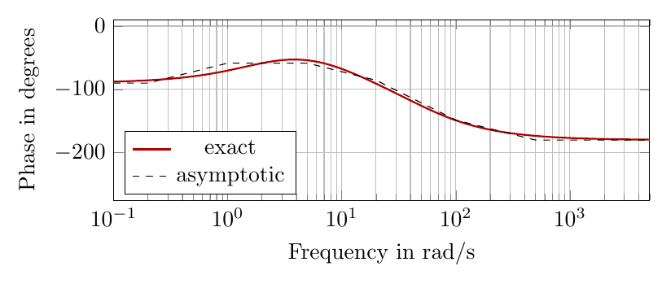
Figure 1.16 shows the corresponding closed-loop step responses. With \(\zeta=0.2\), the resonant peak in the Bode plot translates directly into large overshoot and prolonged oscillation. With \(\zeta=0.7\), the monotonic magnitude roll-off corresponds to a well-damped response with only about \(5\%\) overshoot.
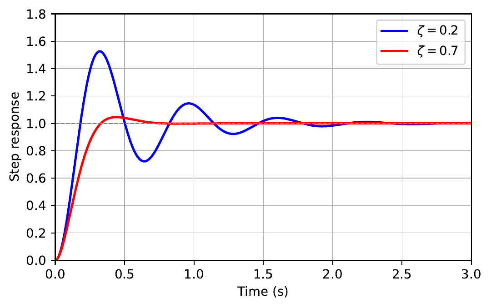
Listing [lst:matlab-second-order-bode] reproduces these plots in MATLAB, making it easy to experiment with other damping values.
MATLAB code for comparing second-order Bode plots with different damping.
import matplotlib.pyplot as plt
import control as ctrl
wn = 10
G1 = ctrl.tf([wn**2], [1, 2*0.2*wn, wn**2])
G2 = ctrl.tf([wn**2], [1, 2*0.7*wn, wn**2])
ctrl.bode_plot([G1, G2])
plt.legend(['zeta = 0.2','zeta = 0.7'])s = tf('s');
wn = 10;
G1 = wn^2/(s^2 + 2*0.2*wn*s + wn^2);
G2 = wn^2/(s^2 + 2*0.7*wn*s + wn^2);
bode(G1, G2), grid on
legend('zeta = 0.2','zeta = 0.7')Frequency-domain stability analysis uses the loop tf \[L(s)=C(s)\,G(s).\] For unity negative feedback, the closed loop becomes unstable if \(L(j\omega)=-1\) for some real \(\omega\) — that is, when the loop gain has magnitude \(1\) (\(0\) dB) and phase \(-180^\circ\) simultaneously. The stability margins measure how far the system is from this condition.
The gain crossover frequency \(\omega_{gc}\) is the frequency where \[|L(j\omega_{gc})|=1 \quad (\text{i.e.\ } 0~\text{dB}).\] The phase margin is \[PM=180^\circ+\angle L(j\omega_{gc}).\] It measures how much additional phase lag would be needed to reach \(-180^\circ\) at the frequency where the gain is unity.
The phase crossover frequency \(\omega_{pc}\) is the frequency where \[\angle L(j\omega_{pc})=-180^\circ.\] The gain margin is \[GM=\frac{1}{|L(j\omega_{pc})|}, \qquad GM_{\mathrm{dB}}=-20\log_{10}|L(j\omega_{pc})|.\] It measures how much the loop gain could increase before the magnitude reaches \(0\) dB at the frequency where the phase is already \(-180^\circ\).
Figure 1.17 shows both margins on a single Bode plot. The phase margin is read at the gain crossover frequency \(\omega_{gc}\): it is the vertical distance between the phase curve and the \(-180^\circ\) line on the phase plot. The gain margin is read at the phase crossover frequency \(\omega_{pc}\): it is the vertical distance between the magnitude curve and the \(0\) dB line on the magnitude plot. A positive phase margin and a positive gain margin (in dB) both indicate stability; either one reaching zero means the system is on the boundary of instability.
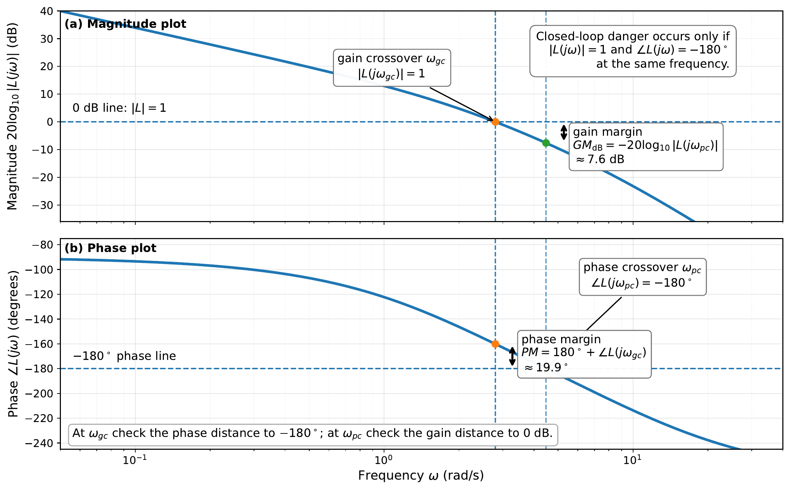
Typical engineering targets are a phase margin of \(30^\circ\) to \(60^\circ\) and a gain margin of at least \(6\) dB.
The gain crossover frequency \(\omega_{gc}\) determines the speed of the closed-loop system. Below \(\omega_{gc}\), the loop gain is much greater than one, so feedback forces the output to follow the reference. Above \(\omega_{gc}\), the loop gain is much less than one, so feedback is essentially inactive. The closed-loop bandwidth is therefore closely related to \(\omega_{gc}\): roughly \(\omega_{\mathrm{BW}} \approx (1\text{--}2)\,\omega_{gc}\).
A higher \(\omega_{gc}\) means a faster response over a wider frequency band, but also more high-frequency sensor noise passing into the control signal. This is the fundamental trade-off of feedback: speed versus noise sensitivity and robustness.
At \(\omega_{pc}\), the open-loop phase is exactly \(-180^\circ\) — the feedback signal arrives in phase with the reference (positive feedback). If the magnitude were also \(0\) dB at that frequency, the system would sustain oscillations. The gain margin tells us how far the magnitude is below \(0\) dB at \(\omega_{pc}\).
A small phase margin (\(PM<20^\circ\)) means the system is “almost oscillating” — the step response will show large overshoot and poor damping. At \(PM=0^\circ\), the system oscillates indefinitely. A phase margin of \(60^\circ\)–\(70^\circ\) gives a well-damped response, while \(PM>80^\circ\) usually means the system responds too slowly.
The gain margin provides robustness against plant gain uncertainty. A gain margin of \(6\) dB means the actual gain can be up to twice the nominal value before instability — useful insurance against modelling errors. Table 1.1 summarises the practical guidelines.
| Margin range | Closed-loop character | Typical use |
|---|---|---|
| \(PM < 20^\circ\) | Highly oscillatory, fragile | Unacceptable |
| \(20^\circ < PM < 30^\circ\) | Oscillatory, marginal robustness | Sometimes acceptable |
| \(30^\circ < PM < 60^\circ\) | Moderate damping, good robustness | Recommended range |
| \(PM > 60^\circ\) | Well damped, possibly slow | Good if speed is adequate |
| \(GM < 3\) dB | Almost no gain tolerance | Unacceptable |
| \(GM = 6\) dB | Factor-of-two gain tolerance | Minimum target |
| \(GM > 12\) dB | Very robust to gain changes | Conservative |
The following two examples illustrate both the phase margin and the gain margin calculations in detail.
Phase margin calculation Let \[L(s)=\frac{10}{s(s+1)}.\]
Step 1: Find the gain crossover frequency. We need \(|L(j\omega)|=1\): \[|L(j\omega)|=\frac{10}{\omega\sqrt{1+\omega^2}}=1 \quad\Longrightarrow\quad \omega^2(1+\omega^2)=100.\] Let \(x=\omega^2\). Then \(x^2+x-100=0\), giving \(x=(-1+\sqrt{401})/2\approx 9.51\), so \[\omega_{gc}=\sqrt{9.51}\approx 3.08~\text{rad/s}.\]
Step 2: Compute the phase at \(\omega_{gc}\). \[\angle L(j3.08)=-90^\circ-\tan^{-1}(3.08)=-90^\circ-72.0^\circ=-162.0^\circ.\]
Step 3: Calculate the phase margin. \[PM=180^\circ+(-162.0^\circ)=18.0^\circ.\] This is a small phase margin. The closed-loop step response will be highly oscillatory, with significant overshoot and slow settling. Figure 1.18 shows the Bode plot with the phase margin annotated.
Gain margin calculation Using the same loop transfer function \(L(s)=10/(s(s+1))\):
Step 1: Find the phase crossover frequency. We need \(\angle L(j\omega)=-180^\circ\): \[\angle L(j\omega)=-90^\circ-\tan^{-1}(\omega)=-180^\circ \quad\Longrightarrow\quad \tan^{-1}(\omega)=90^\circ.\] This requires \(\omega\to\infty\), so strictly speaking there is no finite phase crossover frequency. The phase approaches \(-180^\circ\) but never reaches it. Therefore the gain margin is infinite: \[GM=\infty.\] This makes physical sense: the system has only two poles (a type-1 system), so the phase saturates at \(-180^\circ\) asymptotically. No finite gain increase can make the loop unstable. The stability limitation comes entirely from the phase margin.
Contrast: If the plant had a third pole, e.g. \(L(s)=10/(s(s+1)(s/5+1))\), the phase would reach \(-180^\circ\) at a finite frequency, and the gain margin would be finite and important.
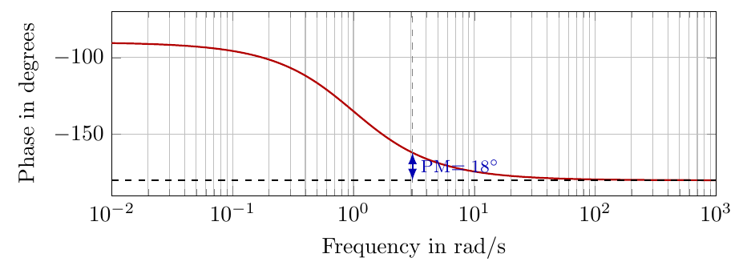
Listing [lst:matlab-margin-example] shows how to compute these margins in MATLAB using the margin command.
MATLAB code for gain and phase margins.
import matplotlib.pyplot as plt
import control as ctrl
import numpy as np
s = ctrl.tf('s')
L = 10/(s*(s+1))
ctrl.bode_plot(L, margins=True)
plt.grid(True)
Gm, Pm, Wcg, Wcp = ctrl.margin(L)
print("GM = %.1f dB, PM = %.1f deg at wgc = %.2f rad/s" % (20*np.log10(Gm), Pm, Wcp))s = tf('s');
L = 10/(s*(s+1));
margin(L), grid on
[Gm, Pm, Wcg, Wcp] = margin(L);
fprintf('GM = %.1f dB, PM = %.1f deg at wgc = %.2f rad/s\n', ...
20*log10(Gm), Pm, Wcp)The Bode margins are computed from the open-loop transfer function \(L(s)=C(s)G(s)\), not from the closed-loop transfer function. The closed-loop is what we want to stabilise; the open-loop Bode plot is the diagnostic tool.
The most commonly used MATLAB commands for Bode analysis are summarised in Table 1.2.
| Command | Purpose |
|---|---|
bode(G) |
Plot magnitude and phase |
margin(G) |
Plot Bode diagram with gain and phase margins |
[Gm,Pm,Wcg,Wcp] = margin(G) |
Compute margins numerically |
bandwidth(T) |
Estimate closed-loop bandwidth |
allmargin(G) |
Detailed margin information |
A typical analysis workflow is shown in Listing [lst:matlab-frequency-workflow].
MATLAB workflow for frequency-domain analysis.
import matplotlib.pyplot as plt
import control as ctrl
s = ctrl.tf('s')
G = 5/((s+1)*(s+4))
# figure
ctrl.bode_plot(G), plt.grid(True)
plt.title('Open-loop Bode plot')
# figure
ctrl.bode_plot(G, margins=True), plt.grid(True)
plt.suptitle('Open-loop margins')
T = ctrl.feedback(G, 1)
bw = ctrl.bandwidth(T)
info = ctrl.step_info(T)
print("Bandwidth = %.2f rad/s, Settling time = %.2f s" % (bw, info['SettlingTime']))s = tf('s');
G = 5/((s+1)*(s+4));
figure
bode(G), grid on
title('Open-loop Bode plot')
figure
margin(G), grid on
title('Open-loop margins')
T = feedback(G, 1);
bw = bandwidth(T);
info = stepinfo(T);
fprintf('Bandwidth = %.2f rad/s, Settling time = %.2f s\n', ...
bw, info.SettlingTime)Control specifications are often stated in the time domain (overshoot, settling time, steady-state error), but frequency-domain tools work with bandwidth, crossover frequency, phase margin, and loop gain. The designer must translate between the two domains. This translation relies on second-order approximations — for higher-order systems, MATLAB verification of the final design is essential.
As we saw in Section [sec:second_order_systems], the standard second-order closed-loop transfer function is \[T(s) = \frac{\omega_n^2}{s^2 + 2\zeta\omega_n s + \omega_n^2},\] where \(\zeta\) is the damping ratio and \(\omega_n\) is the natural frequency. The key time-domain specifications for a step input are: \[\text{overshoot:}\quad M_p = e^{-\pi\zeta/\sqrt{1-\zeta^2}} \times 100\%, \qquad \text{settling time (2\%):}\quad t_s \approx \frac{4}{\zeta\omega_n}.\] These formulas provide the link between the time and frequency domains.
For a second-order system in a unity-feedback configuration, there is an approximate relationship between phase margin and damping ratio.
Engineering rule (sufficient for design): \[PM \approx 100\,\zeta \quad \text{(degrees)}, \qquad \text{for } 0 < \zeta < 0.7.\]
Exact second-order formula (used when higher accuracy is needed): \[PM = \tan^{-1}\!\left(\frac{2\zeta}{\sqrt{\sqrt{1+4\zeta^4}-2\zeta^2}}\right).\] For design purposes, the simple rule \(PM \approx 100\zeta\) is usually sufficient. For example, a specification of no more than \(16\%\) overshoot corresponds to \(\zeta \ge 0.5\) (from the overshoot formula), which translates to a phase margin target of about \(50^\circ\). Figure 1.19 illustrates this relationship visually. The left panel shows a family of unit step responses sweeping from low phase margin (red, highly oscillatory) to high phase margin (blue, well damped). The right panel maps phase margin to overshoot percentage, with shaded regions indicating design quality: margins below \(25^\circ\) are generally unacceptable, \(45^\circ\)–\(70^\circ\) is the preferred design region, and values above \(70^\circ\) are conservative.
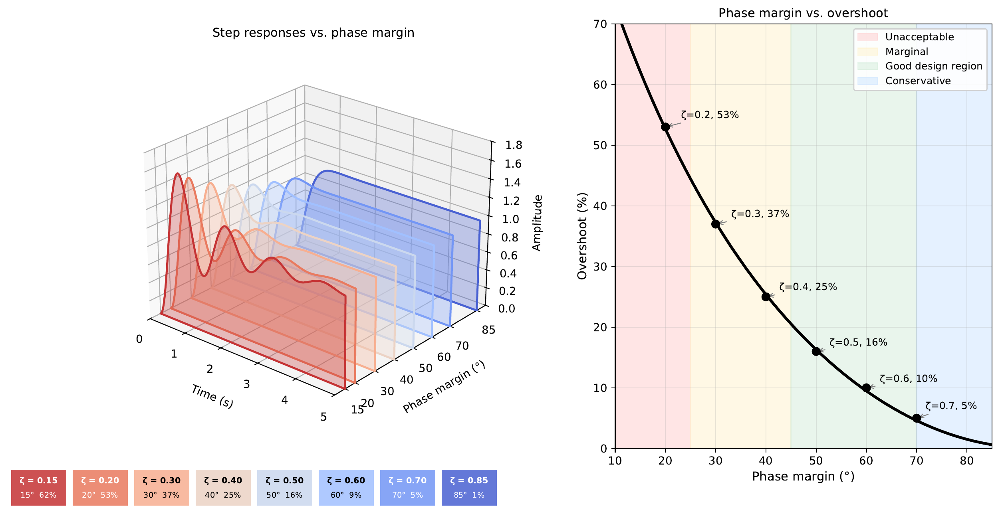
The gain crossover frequency \(\omega_{gc}\) is closely related to the closed-loop bandwidth \(\omega_{\mathrm{BW}}\). For a second-order system with moderate damping (\(0.3 \le \zeta \le 0.7\)), the approximation \[\omega_{\mathrm{BW}} \approx \omega_{gc} \cdot \left(1 + 1.4\zeta + \zeta^2 \right)^{1/2}\] holds reasonably well. For \(\zeta \approx 0.5\), this gives \(\omega_{\mathrm{BW}} \approx 1.4\,\omega_{gc}\). As a rough engineering rule: \[\boxed{\omega_{\mathrm{BW}} \approx (1 \text{ to } 2)\,\omega_{gc}.}\]
Once the bandwidth is known, the rise time can be estimated: \[t_r \approx \frac{1.8}{\omega_{\mathrm{BW}}} \quad \text{(for } 0.4 \le \zeta \le 0.8\text{)}.\] The settling time is best estimated from the time-domain formula \(t_s \approx 4/(\zeta\,\omega_n)\), using \(\omega_n \approx \omega_{\mathrm{BW}}/1.4\) for \(\zeta \approx 0.5\).
The steady-state error to polynomial reference inputs depends on the system type (the number of free integrators in the loop transfer function \(L(s)\)) and the corresponding error constant. Three error constants cover the most common reference signals, as summarised in Table 1.3.
| System type | Integrators | Error constant | Definition | Steady-state error |
|---|---|---|---|---|
| Type 0 | 0 | \(K_p\) (position) | \(\displaystyle\lim_{s\to 0} L(s)\) | Step: \(e_{\mathrm{ss}}=\dfrac{1}{1+K_p}\) |
| Type 1 | 1 | \(K_v\) (velocity) | \(\displaystyle\lim_{s\to 0} s\,L(s)\) | Ramp: \(e_{\mathrm{ss}}=\dfrac{1}{K_v}\) |
| Type 2 | 2 | \(K_a\) (acceleration) | \(\displaystyle\lim_{s\to 0} s^2 L(s)\) | Parabola: \(e_{\mathrm{ss}}=\dfrac{1}{K_a}\) |
A type-0 system has finite step error and infinite ramp error. A type-1 system has zero step error, finite ramp error, and infinite parabolic error. A type-2 system has zero error for both steps and ramps, and finite parabolic error. The designer must identify the system type and the relevant error constant before setting the low-frequency gain target.
On the Bode plot, the error constants can be read from the low-frequency asymptote of the open-loop magnitude:
Type 0: \(K_p\) is the DC gain — read directly from the low-frequency flat region of the magnitude plot.
Type 1: \(K_v\) equals \(|L(j\omega)|\) extrapolated along the \(-20\) dB/dec integrator slope back to \(\omega = 1\) rad/s.
Type 2: \(K_a\) equals the magnitude of \(|L(j\omega)|\) extrapolated along the \(-40\) dB/dec double-integrator slope back to \(\omega = 1\) rad/s.
Reading error constants from the Bode magnitude plot Problem: For each of the following unity-feedback loop transfer functions, identify the system type, read the error constant from the Bode magnitude plot, and compute the steady-state error to the appropriate polynomial input.
\(\displaystyle L_0(s) = \frac{20}{(s+1)(s+5)}\)
\(\displaystyle L_1(s) = \frac{50}{s(s+10)}\)
\(\displaystyle L_2(s) = \frac{900}{s^2(s+30)}\)
(a) Type 0 — position constant \(K_p\). There are no free integrators, so this is a type-0 system. The relevant reference is a unit step. At very low frequencies, all poles and zeros are inactive and the magnitude settles to a flat value: \[|L_0(j\omega)|\big|_{\omega\to 0} = \frac{20}{1 \cdot 5} = 4 \quad \Longrightarrow \quad K_p = 4 \;(12\;\text{dB}).\] On the Bode plot (Figure 1.20), \(K_p\) is simply the height of the low-frequency flat region (shaded). The steady-state step error is \[e_{\mathrm{ss}} = \frac{1}{1+K_p} = \frac{1}{1+4} = 0.2 \quad (20\%).\]
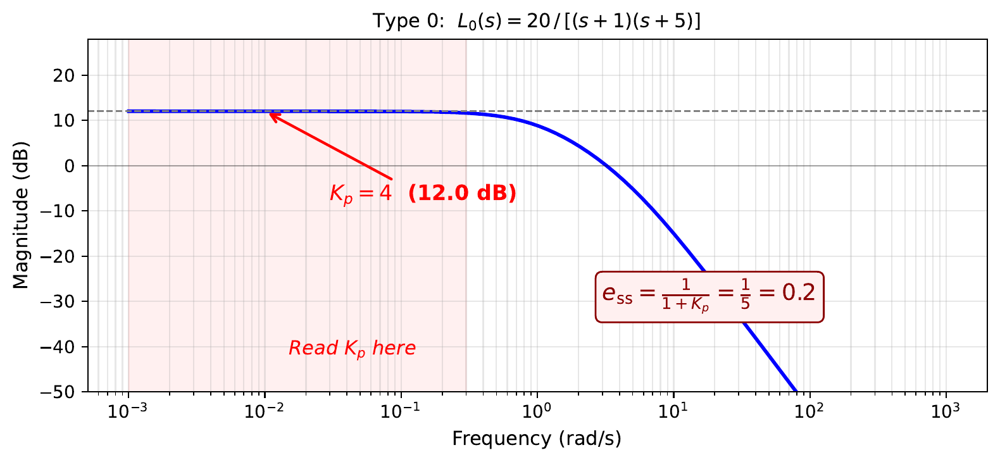
(b) Type 1 — velocity constant \(K_v\). One free integrator \(1/s\) is present, so this is a type-1 system. The relevant reference is a unit ramp. At low frequencies the magnitude plot has a \(-20\) dB/dec slope due to the integrator. Extrapolating this slope back to \(\omega = 1\) rad/s gives the intercept: \[K_v = \lim_{s\to 0} s\,L_1(s) = \frac{50}{10} = 5 \quad \Longrightarrow \quad 20\log_{10}(5) = 14.0\;\text{dB at } \omega=1.\] On the Bode plot (Figure 1.21), follow the \(-20\) dB/dec asymptote (dashed red) and read off the value where it crosses \(\omega = 1\) rad/s. The steady-state ramp error is \[e_{\mathrm{ss}} = \frac{1}{K_v} = \frac{1}{5} = 0.2.\]
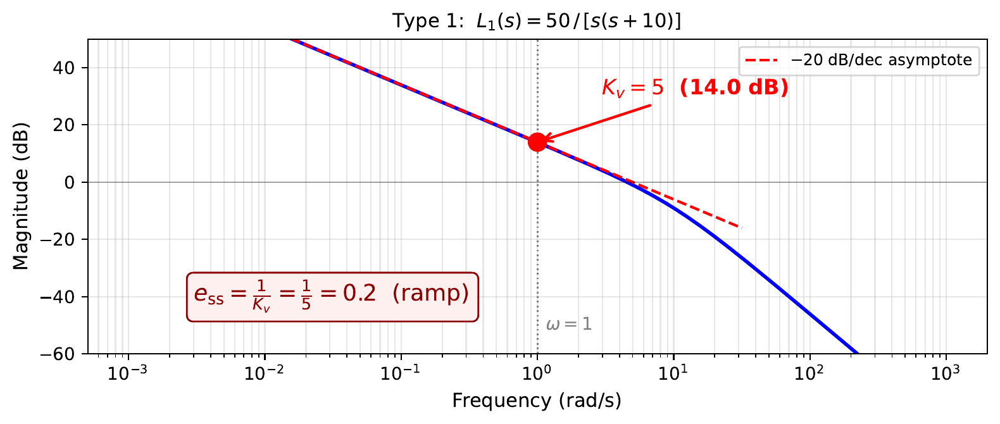
(c) Type 2 — acceleration constant \(K_a\). Two free integrators \(1/s^2\) are present, so this is a type-2 system. The relevant reference is a unit parabola. At low frequencies the magnitude plot has a \(-40\) dB/dec slope. Extrapolating this slope back to \(\omega = 1\) rad/s: \[K_a = \lim_{s\to 0} s^2\,L_2(s) = \frac{900}{30} = 30 \quad \Longrightarrow \quad 20\log_{10}(30) = 29.5\;\text{dB at } \omega=1.\] On the Bode plot (Figure 1.22), follow the \(-40\) dB/dec asymptote (dashed red) to \(\omega = 1\) rad/s. The steady-state parabolic error is \[e_{\mathrm{ss}} = \frac{1}{K_a} = \frac{1}{30} \approx 0.033.\]
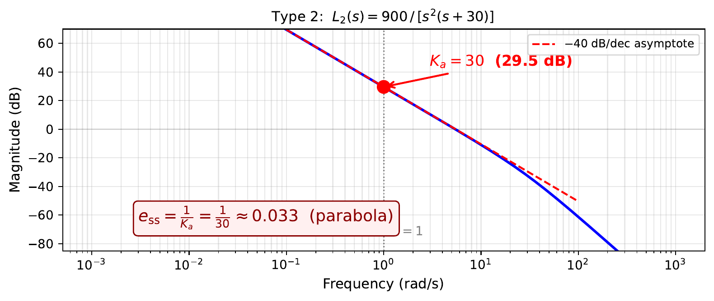
Asymptotic Bode magnitude sketch for a type-2 system Consider the open-loop transfer function \[G(s)=\frac{5(s+5)(s+10)}{s^{2}(s+20)}.\] Sketch the asymptotic Bode magnitude plot. Determine the acceleration error constant \(K_a\) and the gain crossover frequency \(\omega_{gc}\).
Step 1 — Convert to Bode form. Factor each term so that the frequency-dependent parts have the form \((1+s/a)\): \[G(s) = \frac{5\cdot 5\!\left(1+\dfrac{s}{5}\right)\cdot 10\!\left(1+\dfrac{s}{10}\right)}{s^{2}\cdot 20\!\left(1+\dfrac{s}{20}\right)} = \frac{12.5\left(1+\dfrac{s}{5}\right)\!\left(1+\dfrac{s}{10}\right)}{s^{2}\left(1+\dfrac{s}{20}\right)}.\] The Bode gain is \(K_B = 12.5\), i.e. \(20\log_{10}(12.5) = 21.9\) dB.
Step 2 — Identify the components and break frequencies.
| Factor | Type | Break frequency |
|---|---|---|
| \(K_B=12.5\) | constant gain | — |
| \(1/s^{2}\) | double integrator | — |
| \(1+s/5\) | zero | \(5\) rad/s |
| \(1+s/10\) | zero | \(10\) rad/s |
| \(1/(1+s/20)\) | pole | \(20\) rad/s |
Step 3 — Determine the slope in each frequency range. The double integrator gives a starting slope of \(-40\) dB/dec. At each break frequency the slope changes by \(+20\) (zero) or \(-20\) (pole): \[\begin{array}{c|ccl} \text{Range} & \text{Slope change} & \text{Net slope} & \text{Reason}\\ \hline \omega<5 & --- & -40~\mathrm{dB/dec} & \text{double integrator only}\\ 5<\omega<10 & +20 & -20~\mathrm{dB/dec} & \text{zero at 5}\\ 10<\omega<20 & +20 & 0~\mathrm{dB/dec} & \text{zero at 10}\\ \omega>20 & -20 & -20~\mathrm{dB/dec} & \text{pole at 20} \end{array}\]
Step 4 — Fix the vertical position (anchor point). At \(\omega = 1\) rad/s (below all break frequencies), the magnitude is determined by \(K_B/\omega^{2}\): \[20\log_{10}\!\left(\frac{12.5}{1^{2}}\right) = 21.9~\text{dB}.\] From this anchor, draw the \(-40\) dB/dec line until \(\omega = 5\): \[\text{At } \omega=5:\quad 21.9 - 40\log_{10}(5) = 21.9 - 28.0 = -6.0~\text{dB}.\] Continue with \(-20\) dB/dec from 5 to 10: \[\text{At } \omega=10:\quad -6.0 - 20\log_{10}\!\left(\frac{10}{5}\right) = -6.0 - 6.0 = -12.0~\text{dB}.\] The slope is \(0\) dB/dec from 10 to 20, so the magnitude remains at \(-12.0\) dB. After the pole at 20, the slope returns to \(-20\) dB/dec.
The resulting asymptotic sketch is compared with the exact Bode magnitude plot in Figure 1.23.
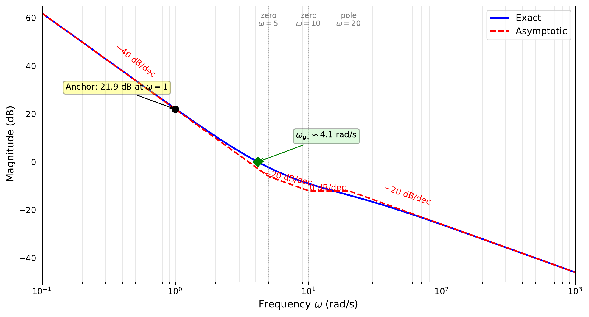
Step 5 — Acceleration error constant. This is a type-2 system (two integrators), so the relevant error constant is \[K_a = \lim_{s\to 0} s^{2}\,G(s) = \frac{5 \times 5 \times 10}{20} = 12.5.\] On the Bode plot, \(K_a\) equals the value of the \(-40\) dB/dec asymptote at \(\omega = 1\) rad/s, which is indeed \(21.9\) dB \(= 12.5\) in linear scale. The steady-state error to a unit parabolic input is \[e_{ss} = \frac{1}{K_a} = \frac{1}{12.5} = 0.08.\]
Step 6 — Gain crossover frequency. The gain crossover is where \(|G(j\omega)| = 0\) dB. From the asymptotic plot, this occurs on the \(-40\) dB/dec segment: \[21.9 - 40\log_{10}(\omega_{gc}) = 0 \quad\Longrightarrow\quad \log_{10}(\omega_{gc}) = \frac{21.9}{40} = 0.549 \quad\Longrightarrow\quad \omega_{gc} \approx 3.5~\text{rad/s}.\] The exact value (from the plot or MATLAB) is \(\omega_{gc} \approx 4.2\) rad/s — the asymptotic estimate is conservative because it does not account for the nearby zero at \(\omega = 5\) which lifts the magnitude slightly above the asymptote.
Given time-domain specifications, the designer translates them into frequency-domain targets using the following procedure:
Overshoot \(\to\) phase margin. Use \(M_p = e^{-\pi\zeta/\sqrt{1-\zeta^2}}\) to find the required \(\zeta\), then set the phase margin target as \(PM \approx 100\zeta\) degrees.
Settling time \(\to\) crossover frequency. Use \(t_s \approx 4/(\zeta\omega_n)\) together with \(\omega_{gc} \approx \omega_n\) (for moderate damping) to estimate the required crossover frequency: \(\omega_{gc} \gtrsim 4/(\zeta\, t_s)\).
Steady-state error \(\to\) low-frequency gain. Identify the system type and the reference signal, then compute the required error constant: \(K_p\) for step tracking (type 0), \(K_v\) for ramp tracking (type 1), or \(K_a\) for parabolic tracking (type 2). For example, a ramp error of \(e_{\mathrm{ss}} \le 0.05\) requires \(K_v \ge 1/0.05 = 20\).
Gain margin. Unless stated otherwise, target \(GM \ge 6\) dB (a factor of 2 in gain).
Translating time-domain specifications to frequency-domain targets Problem: A motor speed control system must have:
overshoot \(\le 20\%\) to a step command,
settling time \(\le 2\) s (2% criterion),
steady-state error \(\le 5\%\) to a ramp input.
Translate these into frequency-domain design targets.
Step 1 (Overshoot \(\to\) \(\zeta\) \(\to\) PM). From \(M_p = 0.20\): \[0.20 = e^{-\pi\zeta/\sqrt{1-\zeta^2}} \quad \Longrightarrow \quad \ln 0.20 = \frac{-\pi\zeta}{\sqrt{1-\zeta^2}} \quad \Longrightarrow \quad \zeta \approx 0.456.\] Phase margin target: \(PM \ge 100 \times 0.456 \approx 46^\circ\). Rounding up for safety: \(PM \ge 50^\circ\).
Step 2 (Settling time \(\to\) \(\omega_{gc}\)). \[\omega_n \ge \frac{4}{\zeta \, t_s} = \frac{4}{0.456 \times 2} = 4.39~\text{rad/s}.\] Since \(\omega_{gc} \approx \omega_n\) for moderate damping, we target \(\omega_{gc} \ge 4.4\) rad/s.
Step 3 (Ramp error \(\to\) \(K_v\)). \[K_v \ge \frac{1}{e_{\mathrm{ss}}} = \frac{1}{0.05} = 20.\]
Summary of frequency-domain targets:
| Parameter | Target |
|---|---|
| Phase margin | \(\ge 50^\circ\) |
| Gain crossover frequency | \(\ge 4.4\) rad/s |
| Velocity error constant | \(K_v \ge 20\) |
| Gain margin | \(\ge 6\) dB |
The second-order approximations are most accurate when the closed-loop system is dominated by a pair of complex poles. For higher-order plants where additional poles are not far from the dominant pair, the approximations underestimate the overshoot and settling time. Always verify the final design with a MATLAB step response.
The goal is to choose a controller \(C(s)\) so that the loop transfer function \(L(s)=C(s)G(s)\) has: large low-frequency gain (tracking and disturbance rejection), an acceptable crossover frequency (speed), adequate phase margin (damping and robustness), and low high-frequency gain (noise rejection). No controller improves everything at once, so frequency-domain design is about shaping the loop gain in a controlled way.
The time-domain specifications translate into three frequency-domain questions, as shown in Table 1.4.
| Time-domain spec | Frequency-domain target | Bode-plot quantity |
|---|---|---|
| Overshoot \(M_p\) | Phase margin PM | Phase at \(\omega_{gc}\) |
| Rise time \(t_r\), settling time \(t_s\) | Crossover frequency \(\omega_{gc}\) | Magnitude = 0 dB frequency |
| Steady-state error \(e_{\mathrm{ss}}\) | Error constant \(K_p\)/\(K_v\)/\(K_a\) | Low-frequency gain level |
PM and \(\omega_{gc}\) both concern the crossover region and are addressed by a lead compensator (adds positive phase and raises gain near crossover). Steady-state accuracy concerns the low-frequency region and is addressed by a lag compensator (boosts low-frequency gain without affecting crossover). The compensator selection involves three checks:
Phase margin: Is PM adequate (from the overshoot spec)? If not, a lead section is needed to add phase near crossover.
Crossover frequency: Is \(\omega_{gc}\) high enough (from the settling/rise time spec)? If not, a lead section is again the remedy — it raises the magnitude near crossover, pushing \(\omega_{gc}\) higher.
Steady-state accuracy: Is the error constant (\(K_p\), \(K_v\), or \(K_a\)) large enough? If not, a lag section is needed to boost low-frequency gain.
Checks 1 and 2 both lead to a lead compensator, so both “No” paths merge in the flowchart (Figure 1.24).
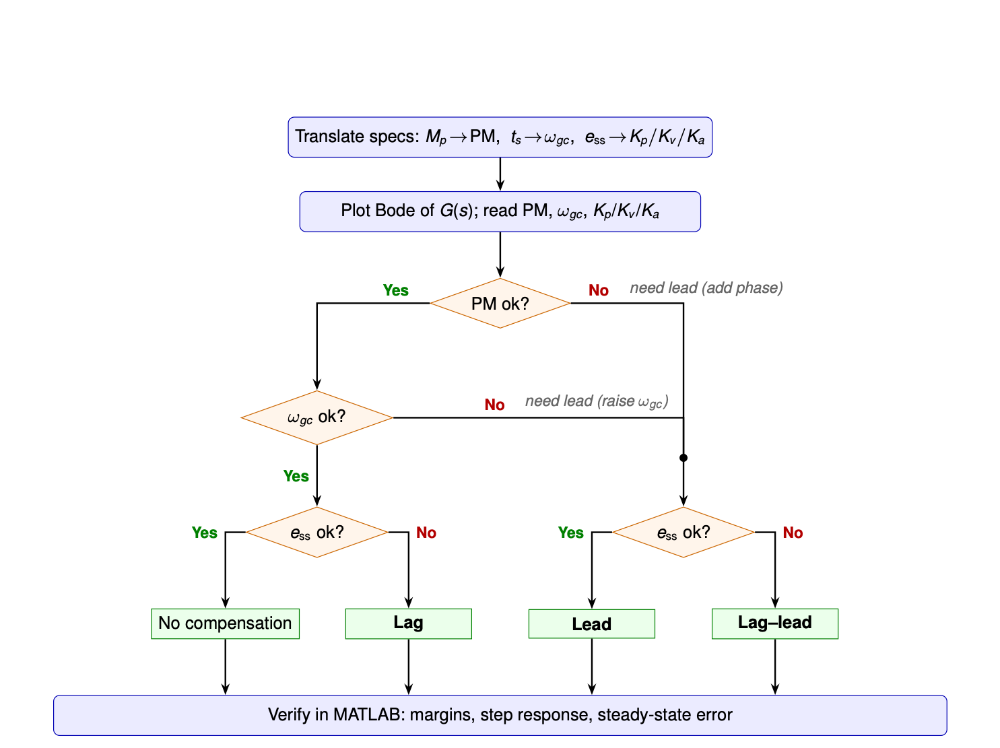
Table 1.5 shows what each compensator does to the Bode plot.
| Compensator | Raises \(\omega_{gc}\)? | Adds PM? | Boosts low-freq gain? |
|---|---|---|---|
| Lead | Yes (moderate) | Yes | No |
| Lag | No (slight decrease) | No (slight decrease) | Yes |
| Lag–lead | Yes | Yes | Yes |
The frequency-domain design process follows a common structure:
Translate specifications. Convert each time-domain requirement into a frequency-domain target:
Overshoot \(\to\) phase margin (via \(PM \approx 100\zeta\)).
Settling time or rise time \(\to\) crossover frequency (via \(\omega_{gc} \gtrsim 4/(\zeta\,t_s)\)).
Steady-state error \(\to\) error constant \(K_p\), \(K_v\), or \(K_a\) (depending on system type and reference).
Gain margin \(\to\) default \(GM \ge 6\) dB unless specified otherwise.
Plot and diagnose. Plot the uncompensated Bode diagram. Read \(\omega_{gc}\), PM, \(\omega_{pc}\), GM, and the relevant error constant. Compare each with the targets from Step 1.
Select compensator type. Use the decision chart (Figure 1.24): if the crossover region (PM and/or \(\omega_{gc}\)) is deficient, a lead section is needed; if the low-frequency gain is deficient, a lag section is needed; if both, use lag–lead.
Compute compensator parameters. Follow the step-by-step algorithm for the chosen compensator type (detailed in the subsections that follow).
Verify. Plot the compensated Bode diagram and the closed-loop step response in MATLAB. Check all specifications: PM, \(\omega_{gc}\), \(e_{\mathrm{ss}}\), GM, overshoot, and settling time. If any target is missed, iterate — typically by adjusting the safety margin or the placement of the compensator zero and pole.
A lead compensator adds positive phase near the gain crossover frequency, improving damping and speed of response.
After plotting the Bode diagram of the uncompensated loop \(L_0(s)=K\,G(s)\), check the phase margin at the gain crossover frequency. A lead compensator is the right tool when:
The phase margin is too small (the closed loop is too oscillatory or close to instability), or
The crossover frequency is too low (the closed-loop response is too sluggish).
A lead section addresses both problems simultaneously: it adds positive phase at crossover (raising PM) and adds gain in that band (pushing \(\omega_{gc}\) higher).
A lead compensator is not the right choice when the main deficiency is steady-state accuracy (low-frequency gain too small). That situation calls for a lag compensator (Section 1.10.4).
The transfer function is \[C_{\mathrm{lead}}(s)=K_c\,\frac{Ts+1}{\alpha Ts+1}, \qquad 0<\alpha<1.\] It has:
a zero at \(\omega_z=1/T\) (lower frequency),
a pole at \(\omega_p=1/(\alpha T)\) (higher frequency, since \(\alpha<1\)).
Between these two frequencies the compensator contributes positive phase. The maximum phase lead and the frequency at which it occurs are \[\phi_{\max}=\sin^{-1}\!\left(\frac{1-\alpha}{1+\alpha}\right), \qquad \omega_m=\frac{1}{T\sqrt{\alpha}}.\] At \(\omega_m\) the compensator magnitude is \(10\log_{10}(1/\alpha)\) dB, exactly half the high-frequency asymptotic gain of \(20\log_{10}(1/\alpha)\) dB. Figure 1.25 summarises all these relationships on a parametric Bode plot.
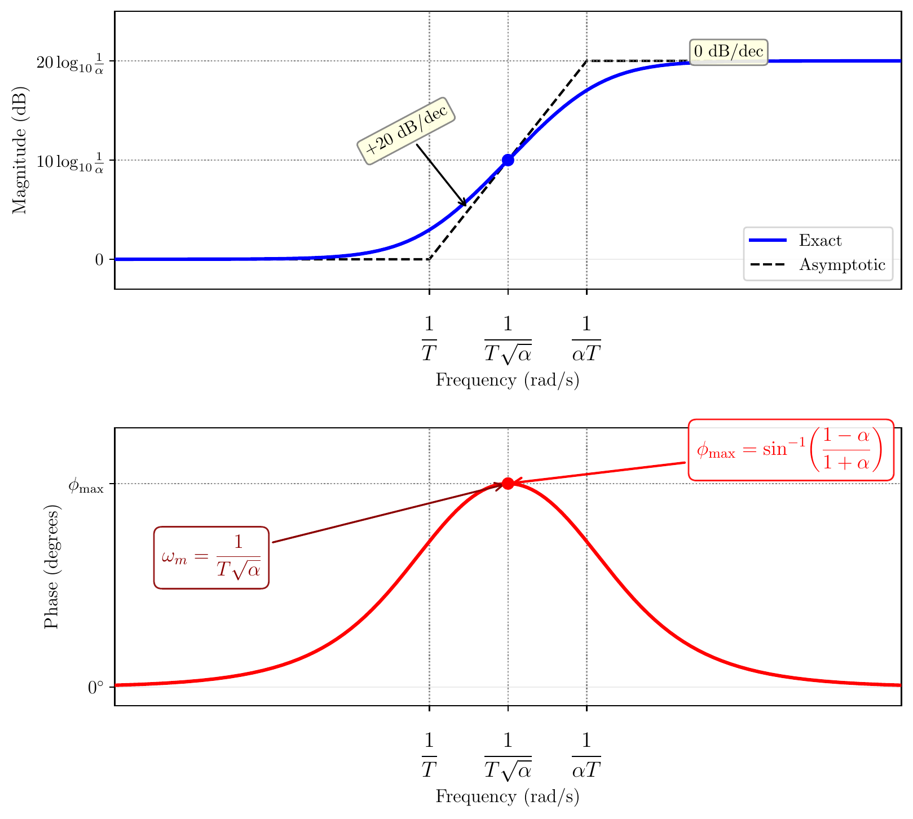
Lead Compensator Design Procedure
Analyse the uncompensated loop. Plot the Bode diagram of the plant \(G(s)\) (or \(K\,G(s)\) if a gain has already been chosen). Read off the current phase margin \(\text{PM}_0\) and gain crossover frequency \(\omega_{gc,0}\).
Determine the required phase lead. Compute the phase deficit: \[\phi_{\mathrm{need}} = \text{PM}_{\mathrm{des}} - \text{PM}_0.\] Because the lead section raises the gain near crossover, the crossover shifts to a higher frequency where the plant phase is more negative. To compensate, add a safety margin of \(5^{\circ}\text{--}15^{\circ}\): \[\phi_{\max} = \phi_{\mathrm{need}} + \underbrace{(5^{\circ}\text{--}15^{\circ})}_{\text{safety margin}}.\] Rule of thumb: use \(5^{\circ}\) if the plant phase curve is fairly flat near crossover, and up to \(15^{\circ}\) if it drops steeply.
Compute \(\alpha\). Invert the \(\phi_{\max}\) formula: \[\alpha = \frac{1-\sin\phi_{\max}}{1+\sin\phi_{\max}}.\] Smaller \(\alpha\) gives more phase lead but spreads the zero and pole further apart, which amplifies high-frequency noise. In practice \(\alpha\ge 0.05\) (i.e. \(\phi_{\max}\le 65^{\circ}\)); if more lead is needed, cascade two lead sections.
Find the new crossover frequency \(\omega_m\). At \(\omega_m\) the compensator adds \(10\log_{10}(1/\alpha)\) dB of gain. For the compensated crossover to fall at \(\omega_m\), the uncompensated magnitude must equal minus this value: \[|G(j\omega_m)|_{\mathrm{dB}} = -10\log_{10}\!\frac{1}{\alpha}.\] Read \(\omega_m\) from the Bode magnitude plot (or solve numerically).
Compute \(T\). \[T = \frac{1}{\omega_m\sqrt{\alpha}}.\] This places the zero at \(\omega_z=1/T=\omega_m\sqrt{\alpha}\) and the pole at \(\omega_p=1/(\alpha T)=\omega_m/\sqrt{\alpha}\), symmetrically around \(\omega_m\) on a log scale.
Set the gain \(K_c\). If a specific low-frequency gain or error constant is required, choose \(K_c\) to meet it. Otherwise set \(K_c=1\) (the lead section alone does not change the DC gain when \(K_c=1\), since \(C_{\mathrm{lead}}(0)=1\)).
Verify. Plot the compensated Bode diagram \(C_{\mathrm{lead}}(j\omega)\,G(j\omega)\) and confirm that PM and \(\omega_{gc}\) meet the specifications. Simulate the closed-loop step response to check overshoot and settling time. If the margin is insufficient, increase the safety margin in Step 2 and repeat.
Design tricks and practical tips
Reading the Bode plot is the key skill. Steps 1 and 4 both require reading values from the magnitude and phase curves. Practise locating the frequency where the magnitude equals a given dB value.
Why the peak goes at \(\omega_m\). The compensator contributes its maximum phase exactly at the geometric mean of its zero and pole. By forcing the compensated crossover to coincide with \(\omega_m\), we extract every degree of phase lead that the compensator can provide.
Zero below, pole above. The zero \(1/T\) always sits below the new crossover \(\omega_m\), and the pole \(1/(\alpha T)\) always sits above it. This is what creates the positive phase hump at crossover.
Noise amplification trade-off. A smaller \(\alpha\) gives more phase lead but also more high-frequency gain (\(20\log_{10}(1/\alpha)\) dB). This amplifies sensor noise. Keep \(\alpha\ge 0.05\); if more lead is needed, use two cascaded lead sections rather than one aggressive one.
The safety margin is not a guess. It accounts for the fact that the plant phase at the new crossover is more negative than at the old one. A steep phase roll-off (e.g. multiple poles near crossover) demands a larger safety margin.
Lead design to improve phase margin — complete worked example Problem: Consider the unity-feedback system shown below, with plant \(G(s)=\frac{10}{s(s+1)}\) and compensator \(C(s)\) to be designed. The specification is \(\text{PM} \ge 50^{\circ}\).
We follow the design procedure step by step.
Step 1 — Analyse the uncompensated loop. With \(C=1\), the Bode plot of \(G(j\omega)\) gives \(\text{PM}_0\approx 18^{\circ}\) at \(\omega_{gc,0}\approx 3.1\) rad/s. The phase margin is far below the target of \(50^{\circ}\), so a lead compensator is needed to add phase near crossover.
Step 2 — Determine the required phase lead. The phase deficit is \[\phi_{\mathrm{need}} = 50^{\circ} - 18^{\circ} = 32^{\circ}.\] The plant phase rolls off at moderate rate near crossover (one integrator plus one real pole), so we add a \(10^{\circ}\) safety margin: \[\phi_{\max} = 32^{\circ} + 10^{\circ} = 42^{\circ}.\]
Step 3 — Compute \(\alpha\). \[\alpha=\frac{1-\sin 42^{\circ}}{1+\sin 42^{\circ}}=\frac{1-0.669}{1+0.669}=\frac{0.331}{1.669}\approx 0.198.\] Since \(\alpha\ge 0.05\), a single lead section is sufficient.
Step 4 — Find the new crossover frequency \(\omega_m\). The compensator adds \(10\log_{10}(1/0.198)\approx 7.0\) dB at \(\omega_m\). For the compensated crossover to land at \(\omega_m\), the uncompensated magnitude must equal \(-7.0\) dB there. From the Bode plot (or solving \(|G(j\omega_m)|_{\mathrm{dB}}=-7.0\) numerically): \[\omega_m\approx 4.7~\text{rad/s}.\]
Step 5 — Compute \(T\) and locate the zero and pole. \[T=\frac{1}{\omega_m\sqrt{\alpha}}=\frac{1}{4.7\times\sqrt{0.198}}=\frac{1}{4.7\times 0.445}\approx 0.478~\text{s}.\] The compensator zero and pole are: \[\omega_z = \frac{1}{T} = 2.09~\text{rad/s} \qquad\text{(below }\omega_m\text{)}, \qquad \omega_p = \frac{1}{\alpha T} = 10.6~\text{rad/s} \qquad\text{(above }\omega_m\text{)}.\]
Step 6 — Set the gain and write the compensator. No low-frequency gain adjustment is required (\(K_c=1\)): \[C_{\mathrm{lead}}(s)=\frac{0.478\,s+1}{0.0946\,s+1}.\]
Step 7 — Verify. Figure 1.26 confirms \(\text{PM}\approx 54^{\circ}\) at \(\omega_{gc}\approx 4.7\) rad/s — the \(10^{\circ}\) safety margin was well chosen. Figure 1.27 shows the closed-loop step response: about \(18\%\) overshoot and \(1.3\) s settling time, a large improvement over the uncompensated \(60\%+\) overshoot.
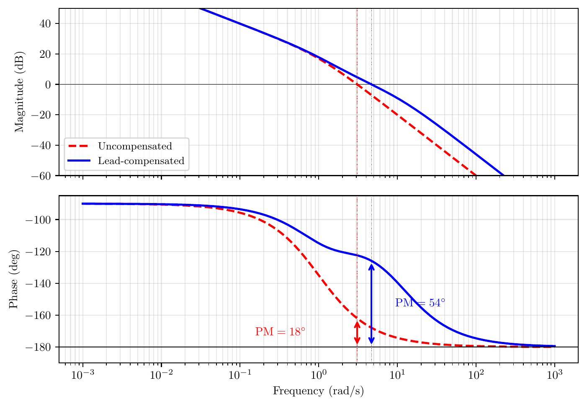
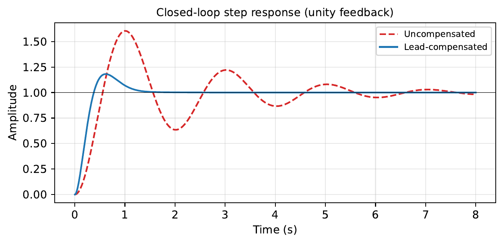
The complete MATLAB implementation is given in Listing [lst:matlab-lead-design].
MATLAB code for the lead compensator design and verification.
import matplotlib.pyplot as plt
import control as ctrl
s = ctrl.tf('s')
G = 10/(s*(s+1))
# Lead compensator
T_lead = 0.478
alpha = 0.198
Clead = (T_lead*s + 1)/(alpha*T_lead*s + 1)
# Bode comparison
ctrl.bode_plot(G, margins=True)
plt.suptitle('Uncompensated')
ctrl.bode_plot(Clead*G, margins=True)
plt.suptitle('Lead-compensated')
# Closed-loop step response (unity feedback: H=1)
Tcl_uncomp = ctrl.feedback(G, 1)
Tcl_lead = ctrl.feedback(Clead*G, 1)
# figure
import numpy as np
t = np.linspace(0, 14, 500)
r1 = ctrl.step_response(Tcl_uncomp, t)
r2 = ctrl.step_response(Tcl_lead, t)
plt.figure()
plt.plot(r1.time, r1.outputs, label='Uncompensated')
plt.plot(r2.time, r2.outputs, label='Lead-compensated')
plt.xlabel('Time (s)'), plt.ylabel('Output')
plt.legend(), plt.grid(True)s = tf('s');
G = 10/(s*(s+1));
% Lead compensator
T_lead = 0.478;
alpha = 0.198;
Clead = (T_lead*s + 1)/(alpha*T_lead*s + 1);
% Bode comparison
figure
margin(G), grid on, title('Uncompensated')
figure
margin(Clead*G), grid on, title('Lead-compensated')
% Closed-loop step response (unity feedback: H=1)
Tcl_uncomp = feedback(G, 1);
Tcl_lead = feedback(Clead*G, 1);
figure
step(Tcl_uncomp, Tcl_lead), grid on
legend('Uncompensated','Lead-compensated')Lead compensator design for a double-integrator plant
Problem. Consider the unity-feedback system in Figure 1.28. The plant is a double integrator \(G(s)=K/s^{2}\), where \(K\) is a gain to be chosen. Design a lead compensator \[C(s)=\frac{Ts+1}{\alpha Ts+1},\qquad 0<\alpha<1,\] and choose \(K\) so that the closed-loop system meets:
settling time \(t_s\le 4\) s (2% criterion),
damping ratio \(\zeta\ge 0.45\) (equivalently, overshoot \(\le 25\%\)).
Assume the closed-loop behaviour is dominated by a second-order pair.
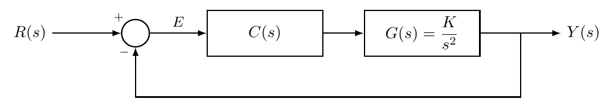
Step 1 — Translate time-domain specs to frequency domain (preliminary step).
For a dominant second-order system with \(\zeta\ge 0.45\), the approximate relation \(\text{PM}\approx 100\zeta\) gives \[\text{PM}_{\mathrm{des}}\ge 100\times 0.45=45^{\circ}.\] The settling-time requirement \(t_s\le 4\) s imposes a minimum bandwidth. Using \(t_s\approx 4/(\zeta\omega_n)\) with \(\zeta=0.45\): \[\omega_n\ge\frac{4}{0.45\times 4}\approx 2.22\;\text{rad/s}.\] As a rule of thumb, the gain crossover frequency should satisfy \(\omega_{gc}\gtrsim\omega_n\), so we target \(\omega_{gc}\ge 2.2\) rad/s.
Step 2 — Analyse the uncompensated loop (Procedure Step 1).
The uncompensated plant \(K/s^2\) is a double integrator: magnitude drops at \(-40\) dB/dec and the phase is a constant \(-180^{\circ}\) at all frequencies. Therefore \(\text{PM}_0 = 0^{\circ}\) — the system is marginally unstable without compensation. A lead compensator is essential to inject positive phase at crossover.
Step 3 — Determine the required phase lead (Procedure Step 2).
The entire \(45^{\circ}\) of phase margin must come from the compensator. The double integrator has a flat \(-180^{\circ}\) phase, so the crossover shift has little effect on the phase, but we still add a \(10^{\circ}\) safety margin: \[\phi_{\max}=45^{\circ}+10^{\circ}=55^{\circ}.\]
Step 4 — Compute \(\alpha\) (Procedure Step 3). \[\alpha=\frac{1-\sin 55^{\circ}}{1+\sin 55^{\circ}} =\frac{1-0.8192}{1+0.8192}=\frac{0.1808}{1.8192}\approx 0.1.\] Since \(\alpha=0.1\ge 0.05\), a single lead section is sufficient.
Step 5 — Find the new crossover frequency \(\omega_m\) (Procedure Step 4).
At \(\omega_m\), the compensator adds \(10\log_{10}(1/\alpha)=10\log_{10}10=10\) dB. For the compensated crossover to fall at \(\omega_m\), the uncompensated magnitude must equal \(-10\) dB there: \[20\log_{10}\!\Bigl(\frac{K}{\omega_m^{2}}\Bigr)=-10 \quad\Longrightarrow\quad \frac{K}{\omega_m^{2}}=10^{-1/2}=0.3162.\] Setting \(K=2\): \[\omega_m=\sqrt{\frac{2}{0.3162}}=\sqrt{6.325}\approx 2.51\;\text{rad/s},\] which exceeds the minimum 2.2 rad/s target from Step 1.
Step 6 — Compute \(T\) and locate the zero and pole (Procedure Step 5). \[T=\frac{1}{\omega_m\sqrt{\alpha}}=\frac{1}{2.51\times\sqrt{0.1}}=\frac{1}{2.51\times 0.3162}\approx 1.26\;\text{s}.\] The compensator zero and pole are: \[\omega_z = \frac{1}{T} = 0.80~\text{rad/s}\quad\text{(below }\omega_m\text{)}, \qquad \omega_p = \frac{1}{\alpha T} = 7.95~\text{rad/s}\quad\text{(above }\omega_m\text{)}.\] The lead compensator is therefore \[\boxed{C_{\mathrm{lead}}(s)=\frac{1.26\,s+1}{0.126\,s+1}}.\]
Step 7 — Verify (Procedure Step 7).
Figure 1.29 shows that the compensated loop achieves \(\text{PM}=55^{\circ}\) at \(\omega_{gc}\approx 2.5\) rad/s. Figure 1.30 confirms a step-response overshoot of \(23\%\) (\(<25\%\)) and settling time \(t_s\approx 3.3\) s (\(<4\) s) — both specifications are satisfied.
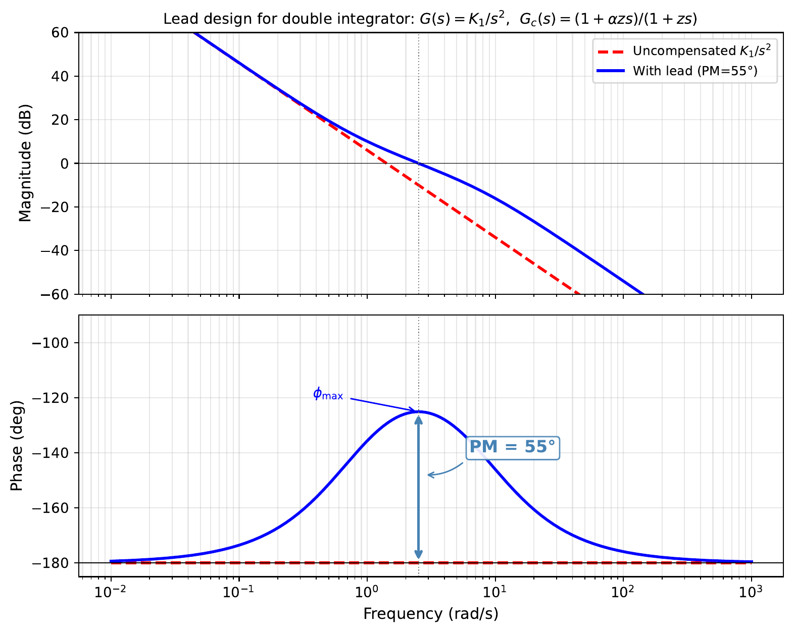
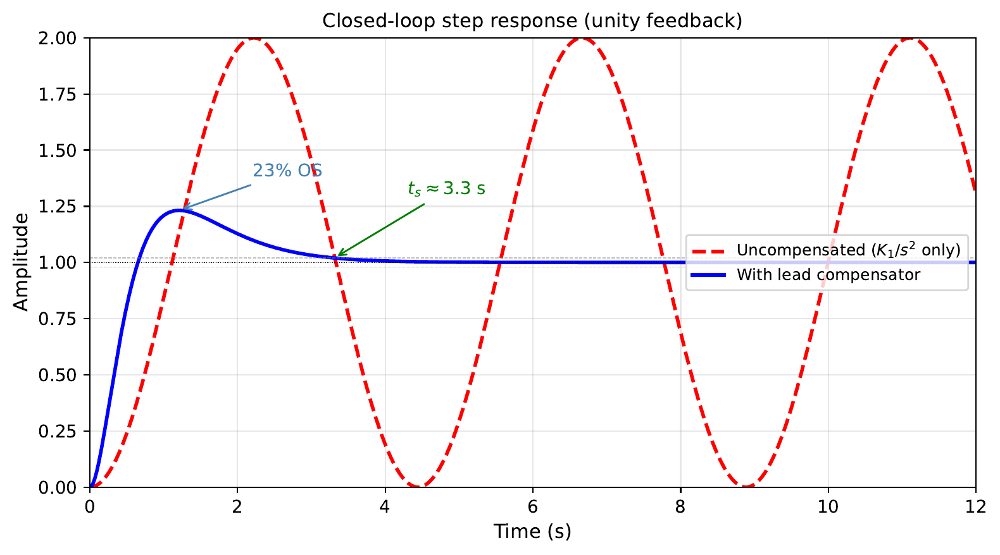
The MATLAB code in Listing [lst:matlab-lead-double-int] reproduces these results.
MATLAB code for the double-integrator lead compensator design.
import numpy as np
import matplotlib.pyplot as plt
import control as ctrl
s = ctrl.tf('s')
K = 2
G = ctrl.tf([K], [1, 0, 0]) # double-integrator plant
alpha = 0.1 # from phi_max = 55 deg
T_lead = 1.26 # 1/(wm*np.sqrt(alpha))
Clead = (T_lead*s + 1)/(alpha*T_lead*s + 1) # lead compensator
L = Clead*G # open-loop
ctrl.bode_plot(G, margins=True)
ctrl.bode_plot(L, margins=True)
plt.suptitle('Uncompensated (blue) vs Lead-compensated (orange)')
Tcl = ctrl.feedback(L, 1) # closed-loop (unity feedback)
t = np.linspace(0, 8, 400)
_resp = ctrl.step_response(Tcl, t)
plt.figure()
plt.plot(_resp.time, _resp.outputs)
plt.xlabel('Time (s)'), plt.ylabel('Output')
plt.grid(True)
plt.title('Closed-loop step response')s = tf('s');
K = 2;
G = K/s^2; % double-integrator plant
alpha = 0.1; % from phi_max = 55 deg
T_lead = 1.26; % 1/(wm*sqrt(alpha))
Clead = (T_lead*s + 1)/(alpha*T_lead*s + 1); % lead compensator
L = Clead*G; % open-loop
figure, margin(L), grid on % Bode plot with PM annotation
Tcl = feedback(L, 1); % closed-loop (unity feedback)
figure, step(Tcl, 8), grid on % step responseA lag compensator increases the low-frequency loop gain without greatly changing the crossover frequency, thereby improving steady-state accuracy.
After plotting the Bode diagram of the uncompensated loop, check the steady-state error performance. A lag compensator is the right tool when:
The phase margin is already adequate (the transient response is acceptable), but
The low-frequency gain is too small (the steady-state error for step, ramp, or parabolic inputs is too large — i.e. \(K_p\), \(K_v\), or \(K_a\) is insufficient).
The lag section boosts the low-frequency gain by a factor \(\beta\) while leaving the crossover region almost untouched, so the transient response is approximately preserved.
A lag compensator is not the right choice when the phase margin itself is deficient. That situation calls for a lead compensator (Section 1.10.3). If both PM and low-frequency gain are inadequate, a lag–lead compensator is needed (Section 1.10.5).
The transfer function is \[C_{\mathrm{lag}}(s)=K_c\,\frac{Ts+1}{\beta Ts+1}, \qquad \beta>1.\] It has:
a zero at \(\omega_z=1/T\) (higher frequency),
a pole at \(\omega_p=1/(\beta T)\) (lower frequency, closer to the origin, since \(\beta>1\)).
Below both frequencies, the magnitude is \(20\log_{10}\beta\) dB higher than above both — this is the low-frequency gain boost. Between the pole and zero, the magnitude transitions at \(-20\) dB/dec. Both the zero and pole are placed well below the crossover frequency, so the lag section boosts low-frequency gain by \(\beta\) while leaving the crossover region essentially unchanged.
The lag section also introduces negative phase between its pole and zero, with a maximum lag of \[\phi_{\min}=-\sin^{-1}\!\left(\frac{\beta-1}{\beta+1}\right),\] occurring at the geometric mean frequency \(\omega_m=1/(T\sqrt{\beta})\). This negative phase must be kept well away from the crossover region — otherwise it will reduce the phase margin. Figure 1.31 summarises all these relationships on a parametric Bode plot.
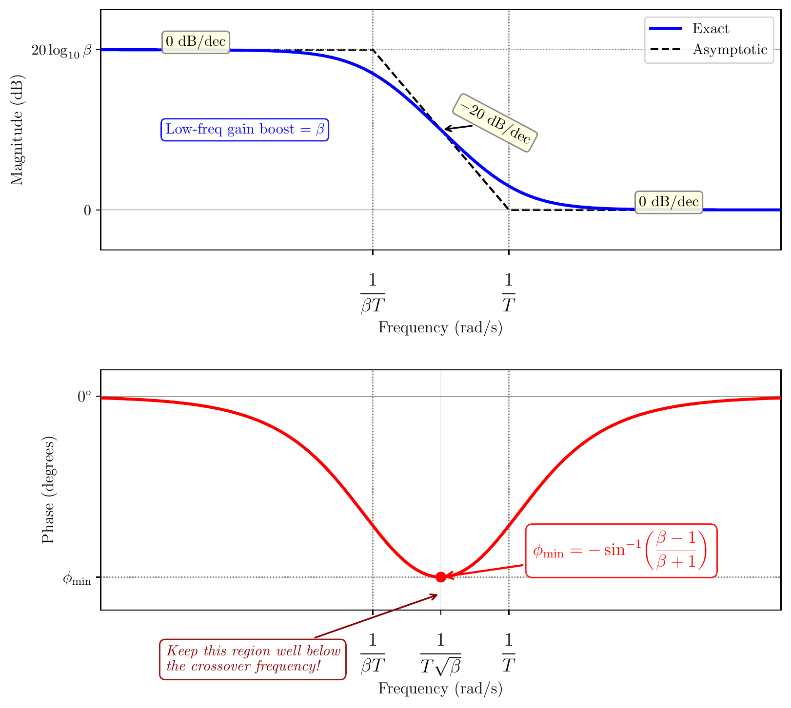
Lag Compensator Design Procedure
Analyse the uncompensated loop. Plot the Bode diagram of \(G(s)\) (or \(K\,G(s)\)). Read off the current phase margin \(\text{PM}_0\), gain crossover frequency \(\omega_{gc,0}\), and compute the relevant error constant (\(K_p\), \(K_v\), or \(K_a\)) from the low-frequency magnitude. Confirm that PM is already acceptable — if not, a lag compensator alone is not enough.
Determine \(\beta\). The gain boost required is \[\beta = \frac{K_{\mathrm{des}}}{K_{\mathrm{uncomp}}},\] where \(K\) is the relevant error constant (\(K_p\), \(K_v\), or \(K_a\)). This is the single most important parameter — it determines how much the low-frequency gain is raised.
Place the lag zero. Choose the zero frequency \(\omega_z=1/T\) at least one decade below the current crossover: \[\omega_z \le \frac{\omega_{gc,0}}{10}.\] This ensures that the negative phase contribution of the lag section has returned close to \(0^{\circ}\) by the time the crossover region is reached.
Rule of thumb: a factor of 8–10 below \(\omega_{gc}\) is typical. Placing it even lower reduces the phase margin loss but slows down the closed-loop settling (the lag pole is closer to the origin).
Compute \(T\) and locate the pole. \[T = \frac{1}{\omega_z},\qquad \omega_p = \frac{\omega_z}{\beta} = \frac{1}{\beta T}.\] The pole sits \(\beta\) times lower than the zero on the frequency axis.
Set the gain and write the compensator. A common choice is \(K_c = \beta\), which puts the entire low-frequency boost into the compensator: \[C_{\mathrm{lag}}(s) = \beta\,\frac{Ts+1}{\beta Ts+1}, \qquad C_{\mathrm{lag}}(0) = \beta.\] Alternatively, part of the boost can come from a separate loop gain; the key requirement is that the total DC loop gain meets the error-constant specification.
Verify. Plot the compensated Bode diagram and confirm that:
the low-frequency gain has increased by \(20\log_{10}\beta\) dB (error constant met),
the crossover frequency is approximately unchanged,
the phase margin has dropped by no more than a few degrees.
Simulate the closed-loop step response to confirm the transient is still acceptable. If the phase margin drops too much, move the zero lower (increase \(T\)).
Design tricks and practical tips
What the lag section does to the magnitude curve. It raises the gain at low frequencies (where accuracy matters) without raising it near crossover (where PM matters), by placing a pole–zero pair that tilts the magnitude curve downward between the two break frequencies.
Phase margin will decrease slightly. The negative phase between the pole and zero always extends partially into the crossover region. Typically PM drops by \(3^{\circ}\text{--}8^{\circ}\); if this is unacceptable, push the zero further below crossover.
Slow closed-loop pole. The pole at \(1/(\beta T)\) is very close to the origin. This adds a slow component to the closed-loop response — the step response may appear settled but continue creeping for tens of seconds before reaching its final value.
Don’t use lag for PM improvement. Lag adds negative phase, not positive. It cannot fix a system whose PM is already too low — that requires lead compensation.
\(\beta\) is rarely larger than 20. Very large \(\beta\) pushes the pole too close to the origin, making the closed-loop settling unacceptably slow. If more gain boost is needed, redesign the system (e.g. add an integrator or use lag–lead).
Lag design for steady-state accuracy — complete worked example Problem: A unity-feedback system (same structure as the lead examples above) has plant \(G(s)=1/(s(s+1))\). The uncompensated step response is acceptable (\(\text{PM}_0 \approx 52^{\circ}\)), but the velocity error constant is only \[K_v=\lim_{s\to 0}s\,G(s)=1,\] giving a steady-state ramp error of \(e_{\mathrm{ss}}=1/K_v=1\). The specification requires \(e_{\mathrm{ss}}\le 0.1\), i.e. \(K_v\ge 10\).
We follow the design procedure step by step.
Step 1 — Analyse the uncompensated loop. The Bode plot of \(G(j\omega)\) gives \(\text{PM}_0\approx 52^{\circ}\) at \(\omega_{gc,0}\approx 0.78\) rad/s. The phase margin is adequate, but \(K_v=1\) is far below the required \(10\). Since PM is already good and only the low-frequency gain needs improvement, a lag compensator is the right choice.
Step 2 — Determine \(\beta\). \[\beta = \frac{K_v^{\mathrm{des}}}{K_v^{\mathrm{uncomp}}} = \frac{10}{1} = 10.\]
Step 3 — Place the lag zero. The guideline says \(\omega_z \le \omega_{gc}/10 = 0.078\) rad/s. We relax this slightly to \(\omega_z = 0.1\) rad/s (\(\approx \omega_{gc}/8\)), because pushing the zero to \(0.078\) would place the pole at \(0.0078\) rad/s — unacceptably close to the origin, causing extremely slow settling. With this choice: \[\omega_z = 0.1~\text{rad/s},\qquad T = 1/\omega_z = 10~\text{s}.\]
Step 4 — Locate the pole. \[\omega_p = \frac{\omega_z}{\beta} = \frac{0.1}{10} = 0.01~\text{rad/s},\qquad \beta T = 100~\text{s}.\]
Step 5 — Write the compensator. With \(K_c = \beta = 10\): \[C_{\mathrm{lag}}(s)=10\cdot\frac{10s+1}{100s+1}.\] The new velocity error constant is \(K_v = \beta\times K_v^{\mathrm{uncomp}} = 10\times 1 = 10\), meeting the specification.
Step 6 — Verify. Figure 1.32 shows that the low-frequency magnitude is raised by \(20\) dB (the factor of \(10\)) while the crossover region is barely affected. The phase margin drops from \(52^{\circ}\) to \(46^{\circ}\) — a small price for a tenfold improvement in \(K_v\). Figure 1.33 (left) confirms the step response remains well-damped, and Figure 1.33 (right) shows the ramp response: the steady-state ramp error drops from \(1\) to \(0.1\), exactly as predicted by the new \(K_v=10\).
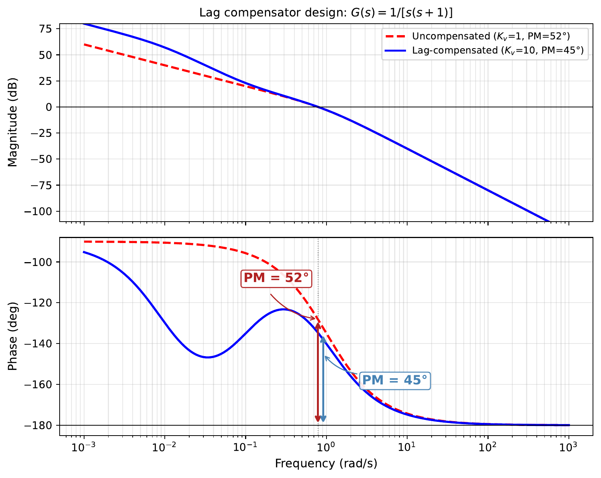
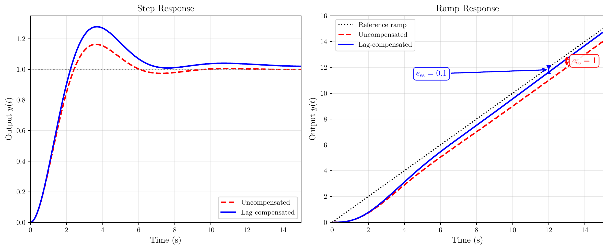
The MATLAB implementation is given in Listing [lst:matlab-lag-design].
MATLAB code for the lag compensator design and verification.
import matplotlib.pyplot as plt
import control as ctrl
s = ctrl.tf('s')
G = 1/(s*(s+1))
# Lag compensator
beta = 10
T_lag = 10
Clag = beta*(T_lag*s + 1)/(beta*T_lag*s + 1)
# Bode comparison
ctrl.bode_plot(G, margins=True)
plt.suptitle('Uncompensated')
ctrl.bode_plot(Clag*G, margins=True)
plt.suptitle('Lag-compensated')
# Verify Kv
Kv = ctrl.dcgain(ctrl.minreal(s*Clag*G, verbose=False))
print("Kv = %.1f, ramp error = %.2f" % (Kv, 1/Kv,))
# Closed-loop step response comparison
import numpy as np
Tcl_uncomp = ctrl.feedback(G, 1)
Tcl_lag = ctrl.feedback(Clag*G, 1)
t = np.linspace(0, 30, 500)
r1 = ctrl.step_response(Tcl_uncomp, t)
r2 = ctrl.step_response(Tcl_lag, t)
plt.figure()
plt.plot(r1.time, r1.outputs, label='Uncompensated')
plt.plot(r2.time, r2.outputs, label='Lag-compensated')
plt.xlabel('Time (s)'), plt.ylabel('Output')
plt.legend(), plt.grid(True), plt.title('Step response')s = tf('s');
G = 1/(s*(s+1));
% Lag compensator
beta = 10;
T_lag = 10;
Clag = beta*(T_lag*s + 1)/(beta*T_lag*s + 1);
% Bode comparison
figure
margin(G), grid on, title('Uncompensated')
figure
margin(Clag*G), grid on, title('Lag-compensated')
% Verify Kv
Kv = dcgain(s*Clag*G);
fprintf('Kv = %.1f, ramp error = %.2f\n', Kv, 1/Kv)
% Closed-loop step response (unity feedback)
Tcl = feedback(Clag*G, 1);
figure
step(Tcl), grid on, title('Step response')When a plant has both poor steady-state accuracy and poor phase margin, a lag–lead compensator combines both sections: \[C(s)=K_c \underbrace{\frac{T_1s+1}{\beta T_1s+1}}_{\text{lag section}} \;\; \underbrace{\frac{T_2s+1}{\alpha T_2s+1}}_{\text{lead section}}, \qquad \beta>1,\quad 0<\alpha<1.\]
Lag–lead design — complete worked example Problem: In the same unity-feedback configuration, the plant is \[G_p(s) = \frac{280(s+0.5)}{s(s+0.2)(s+5)(s+70)} = \frac{2\,(1+s/0.5)}{s\,(1+s/0.2)(1+s/5)(1+s/70)}.\] This is a type-1 system (one free integrator), so there is zero steady-state error for a step and finite error for a ramp. The time-domain specifications are:
overshoot \(\le 12\%\) to a step command,
settling time \(t_s \le 1.5\) s (\(2\%\) criterion),
steady-state ramp-tracking error \(e_{\mathrm{ss}} \le 2\%\).
Step 1: Translate to frequency-domain targets.
Overshoot \(\to\) phase margin. From \(M_p = e^{-\pi\zeta/\sqrt{1-\zeta^2}} \le 0.12\) we obtain \(\zeta \ge 0.56\), giving \[PM \ge 100\zeta \approx 56^\circ.\] We round to \(PM \ge 55^\circ\) as our design target.
Settling time \(\to\) crossover frequency. Using \(\omega_{gc} \gtrsim 4/(\zeta\,t_s)\): \[\omega_{gc} \ge \frac{4}{0.56 \times 1.5} \approx 4.8~\text{rad/s}.\] We round up to target \(\omega_{gc} = 5\) rad/s.
Ramp error \(\to\) velocity error constant. For a type-1 system, \(e_{\mathrm{ss}} = 1/K_v \le 0.02\), so \(K_v \ge 50\).
Gain margin. We adopt the standard default \(GM \ge 6\) dB.
Step 2: Analyse the uncompensated plant. The velocity error constant of the plant alone is \[K_{v,\mathrm{plant}} = \lim_{s\to 0} s\,G_p(s) = \frac{280 \times 0.5}{0.2 \times 5 \times 70} = 2.\] We need \(K_v = 50\), so an overall gain increase of \(50/2 = 25\) is required. From the uncompensated Bode plot (dashed red in Figure 1.34): \(\omega_{gc} \approx 0.9\) rad/s and \(PM \approx 63^\circ\). The phase margin is adequate, but \(\omega_{gc}\) is far below the \(5\) rad/s target and \(K_v\) is far too low. Neither lag nor lead alone can satisfy all three specifications simultaneously, so a lag–lead compensator is required.
Step 3: Determine the gain distribution. At \(\omega = 5\) rad/s the uncompensated magnitude is \(-18.9\) dB, so the total gain needed at crossover is \(+18.9\) dB to bring \(|L(j5)| = 0\) dB. The lead section will contribute some of this gain at its peak; the remainder must come from the explicit gain \(K_c\). We design the lead first, then allocate \(K_c\) and \(\beta\) accordingly.
Step 4: Design the lead section. At \(\omega = 5\) rad/s, the uncompensated phase is \(-142.5^\circ\), giving a “would-be” phase margin of only \(37.5^\circ\). The deficit is \(55 - 37.5 = 17.5^\circ\). Adding a \(5^\circ\) safety margin for the negative phase contributed by the lag section near crossover, we target \(\phi_{\max} = 22.5^\circ\): \[\alpha = \frac{1 - \sin 22.5^\circ}{1 + \sin 22.5^\circ} \approx 0.447.\] The lead section adds \(10\log_{10}(1/0.447) \approx 3.5\) dB at its peak. We place this peak at the desired crossover \(\omega_m = 5\) rad/s: \[T_2 = \frac{1}{\omega_m\sqrt{\alpha}} = \frac{1}{5 \times 0.668} \approx 0.299~\text{s}.\] \[C_{\mathrm{lead}}(s) = \frac{0.299s + 1}{0.134s + 1} \quad(\text{zero at } 3.34,\ \text{pole at } 7.48~\text{rad/s}).\]
Step 5: Set \(K_c\) and design the lag section. Of the \(18.9\) dB needed at crossover, the lead provides \(3.5\) dB, so the explicit gain must supply \(18.9 - 3.5 = 15.4\) dB, giving \(K_c = 10^{15.4/20} \approx 5.89\). With this gain alone, \(K_v = K_c \times 2 = 11.8\). The lag section must boost this to \(50\): \[\beta = \frac{50}{11.8} \approx 4.24.\] We place the lag zero two decades below crossover at \(\omega_z = 0.05\) rad/s so that the negative phase of the lag section is concentrated well below \(\omega_{gc}\): \[C_{\mathrm{lag}}(s) = 4.24 \cdot \frac{20s + 1}{84.8s + 1} \quad(\text{zero at } 0.05,\ \text{pole at } 0.012~\text{rad/s}).\]
Step 6: Combine and verify. \[C(s) = K_c \cdot C_{\mathrm{lag}}(s) \cdot C_{\mathrm{lead}}(s) = 5.89 \times 4.24 \cdot \frac{20s+1}{84.8s+1} \cdot \frac{0.299s+1}{0.134s+1}.\] Figure 1.34 confirms: the intermediate loop \(K_c C_{\mathrm{lag}} G_p\) (orange dotted) raises \(K_v\) to \(50\) and moves \(\omega_{gc}\) to \(3.8\) rad/s with \(PM \approx 45^\circ\). Adding the lead section (blue solid) pushes \(\omega_{gc}\) to exactly \(5\) rad/s with \(PM \approx 60^\circ\) and \(GM \approx 22\) dB — all specifications are met with margin.
Figure 1.35 compares the time responses. The compensated step response reaches steady state in about \(3\) s with only \(11\%\) overshoot (\(\le 12\%\) spec met), versus the sluggish uncompensated response that takes over \(8\) s. The ramp response confirms the steady-state tracking: the uncompensated system lags the ramp by \(1/K_v = 0.5\), while the compensated system tracks with an error of only \(1/50 = 0.02\) (\(\le 2\%\) spec met).
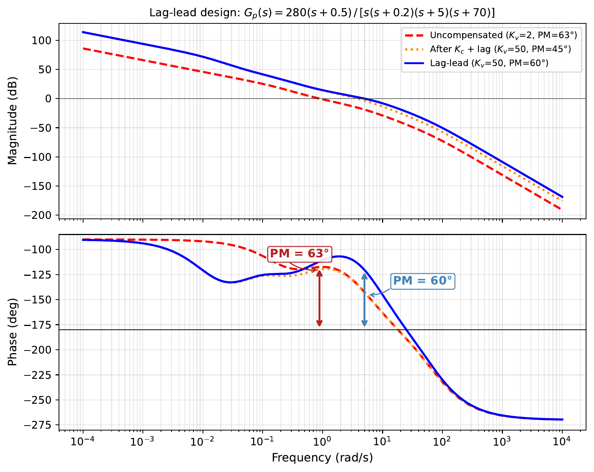
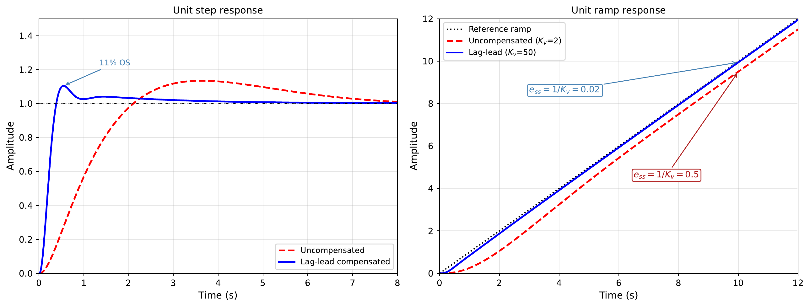
The complete MATLAB code for this design is given in Listing [lst:matlab-lag-lead-design].
MATLAB code for the lag--lead compensator design and verification.
import numpy as np
import matplotlib.pyplot as plt
import control as ctrl
s = ctrl.tf('s')
Gp = 280*(s+0.5) / (s*(s+0.2)*(s+5)*(s+70))
# Uncompensated analysis
Kv_plant = ctrl.dcgain(ctrl.minreal(s*Gp, verbose=False)) # = 2
print("Kv_plant = %.1f" % (Kv_plant,))
# Lead section: phi_max = 22.5 deg at wm = 5 rad/s
alpha = 0.447
T2 = 1/(5*np.sqrt(alpha)) # = 0.299 s
Clead = (T2*s + 1)/(alpha*T2*s + 1)
# Gain Kc to bring magnitude to 0 dB at wgc = 5
Kc = 5.89
# Lag section: beta to raise Kv from Kc*2 to 50
beta = 50/(Kc*Kv_plant) # = 4.24
Clag = beta*(20*s + 1)/(beta*20*s + 1)
# Combined compensator
C = Kc*Clag*Clead
# Verify
Kv_final = ctrl.dcgain(ctrl.minreal(s*C*Gp, verbose=False))
print("Kv = %.1f" % (Kv_final,))
ctrl.bode_plot(Gp, margins=True)
plt.suptitle('Uncompensated')
ctrl.bode_plot(Kc*Clag*Gp, margins=True)
plt.suptitle('After Kc + lag')
ctrl.bode_plot(C*Gp, margins=True)
plt.suptitle('Lag-lead compensated')
Tcl_uncomp = ctrl.feedback(Gp, 1)
Tcl_comp = ctrl.feedback(C*Gp, 1)
t = np.linspace(0, 8, 400)
r1 = ctrl.step_response(Tcl_uncomp, t)
r2 = ctrl.step_response(Tcl_comp, t)
plt.figure()
plt.plot(r1.time, r1.outputs, label='Uncompensated')
plt.plot(r2.time, r2.outputs, label='Lag-lead compensated')
plt.xlabel('Time (s)'), plt.ylabel('Output')
plt.legend(), plt.grid(True), plt.title('Step response')
info = ctrl.step_info(Tcl_comp)
print("Overshoot = %.1f%%, Settling time = %.2f s" % (info['Overshoot'], info['SettlingTime']))s = tf('s');
Gp = 280*(s+0.5) / (s*(s+0.2)*(s+5)*(s+70));
% Uncompensated analysis
Kv_plant = dcgain(s*Gp); % = 2
fprintf('Kv_plant = %.1f\n', Kv_plant)
% Lead section: phi_max = 22.5 deg at wm = 5 rad/s
alpha = 0.447;
T2 = 1/(5*sqrt(alpha)); % = 0.299 s
Clead = (T2*s + 1)/(alpha*T2*s + 1);
% Gain Kc to bring magnitude to 0 dB at wgc = 5
Kc = 5.89;
% Lag section: beta to raise Kv from Kc*2 to 50
beta = 50/(Kc*Kv_plant); % = 4.24
Clag = beta*(20*s + 1)/(beta*20*s + 1);
% Combined compensator
C = Kc*Clag*Clead;
% Verify
Kv_final = dcgain(s*C*Gp);
fprintf('Kv = %.1f\n', Kv_final)
figure
margin(Gp), grid on, title('Uncompensated')
figure
margin(Kc*Clag*Gp), grid on, title('After Kc + lag')
figure
margin(C*Gp), grid on, title('Lag-lead compensated')
Tcl = feedback(C*Gp, 1);
figure, step(Tcl, 8), grid on
title('Closed-loop step response')
stepinfo(Tcl)Satellite antenna positioning system — from specs to compensator A satellite ground-station antenna must track a slowly moving satellite. The unity-feedback system has plant transfer function (motor voltage to antenna angle) \[G(s) = \frac{10}{s(s+2)(s+5)}.\] Time-domain specifications: overshoot \(\le 25\%\); steady-state ramp error \(\le 10\%\).
Step 1: Translate to frequency-domain targets.
Overshoot \(\le 25\%\) \(\Rightarrow\) \(\zeta \ge 0.40\) \(\Rightarrow\) \(PM \ge 40^\circ\). With safety: target \(PM \ge 45^\circ\).
Ramp error \(\le 10\%\) \(\Rightarrow\) \(K_v \ge 10\). Uncompensated \(K_v = 10/(2\!\times\!5) = 1\), so we need a tenfold gain increase.
Step 2: Diagnose the uncompensated loop. From Figure 1.36 (dashed red): \(PM \approx 56^\circ\) at \(\omega_{gc} \approx 0.9\) rad/s, \(GM \approx 17\) dB. Phase margin is adequate; \(K_v\) is not. The decision chart says: try lag.
Step 3: Attempt a lag compensator. Set \(\beta = 10/1 = 10\). We place the lag zero at \(\omega_z = 0.2\) rad/s rather than the usual “one decade below crossover” rule of thumb (\(\omega_{gc}/10\approx 0.09\)), because the crossover is already low at \(0.9\) rad/s and pushing the zero to \(0.09\) would give an impractically slow pole at \(0.009\) rad/s. With \(\omega_z=0.2\): \[C_{\mathrm{lag}}(s) = 10 \cdot \frac{5s + 1}{50s + 1} \quad(\text{zero at }0.2,\ \text{pole at }0.02\ \text{rad/s}).\] Figure 1.36 (orange dotted) shows the intermediate result: \(PM \approx 44^\circ\). The lag zero at only \(\omega_{gc}/4.5\) — closer than ideal — contributes about \(12^\circ\) of negative phase near the crossover region, dropping PM below the \(45^\circ\) target. Lag alone is insufficient; we add a lead section.
Step 4: Add a lead section. The shortfall is only \(1^\circ\), but a margin of \(1^\circ\) is unacceptable in practice (component tolerances, model uncertainty). We target \(\phi_{\max} = 25^\circ\) to give a robust margin: \[\alpha = \frac{1 - \sin 25^\circ}{1 + \sin 25^\circ} \approx 0.406.\] The lead peak adds \(3.9\) dB. We place it where the intermediate loop magnitude equals \(-3.9\) dB (\(\omega_m \approx 1.3\) rad/s), so the lead pushes the crossover to that frequency: \[T_2 = \frac{1}{1.3 \times \sqrt{0.406}} \approx 1.21~\text{s}. \qquad C_{\mathrm{lead}}(s) = \frac{1.21s + 1}{0.49s + 1} \quad(\text{zero at }0.82,\ \text{pole at }2.03).\]
Step 5: Combine and verify. \[C(s) = 10 \cdot \frac{5s+1}{50s+1} \cdot \frac{1.21s+1}{0.49s+1}.\] Figure 1.36 (blue solid) confirms \(PM \approx 60^\circ\) at \(\omega_{gc} \approx 1.3\) rad/s, \(GM \approx 14\) dB, \(K_v = 10\). Figure 1.37 shows about \(13\%\) overshoot (well within the \(25\%\) limit) and a ramp tracking error that converges to \(1/K_v = 10\%\).
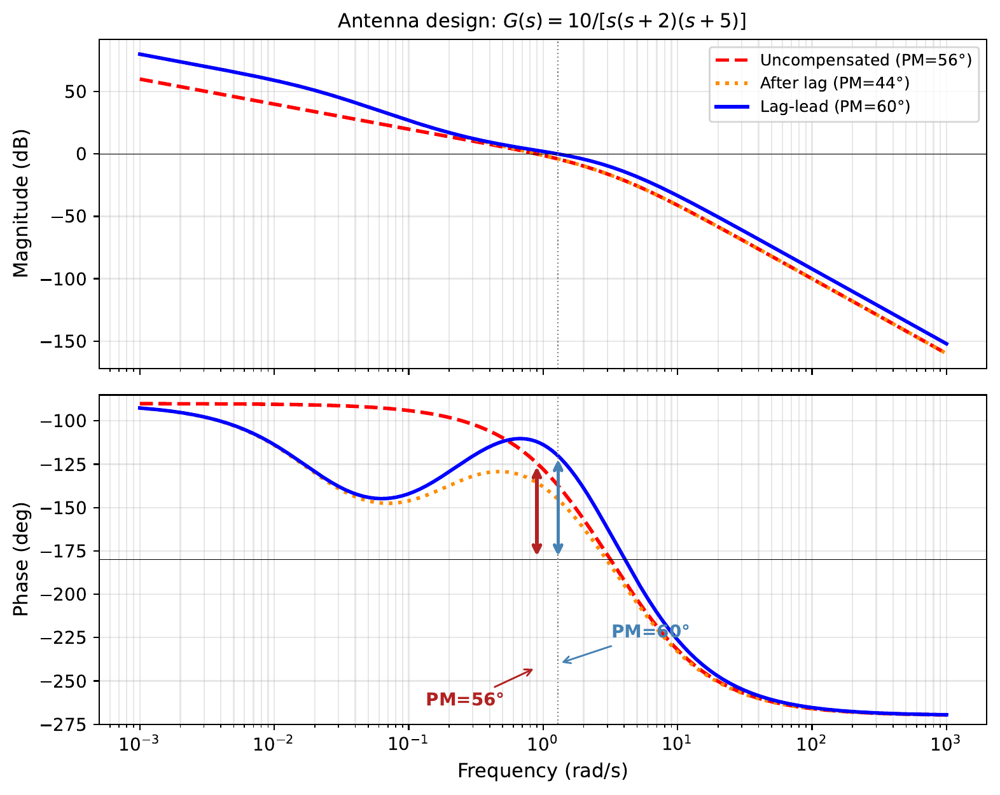
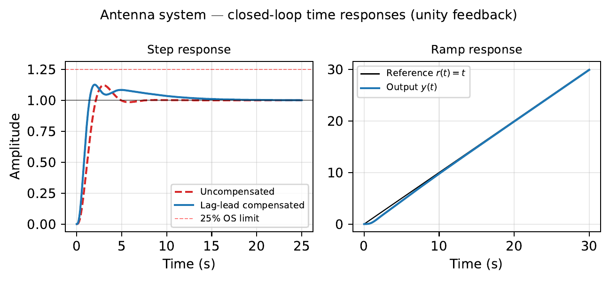
The full MATLAB implementation is given in Listing [lst:matlab-antenna-design].
MATLAB code for the antenna positioning system design.
import matplotlib.pyplot as plt
import control as ctrl
s = ctrl.tf('s')
G = 10/(s*(s+2)*(s+5))
# Diagnose uncompensated loop
Kv_uncomp = ctrl.dcgain(ctrl.minreal(s*G, verbose=False))
print("Uncompensated Kv = %.1f" % (Kv_uncomp,))
# Lag section
beta = 10
Clag_section = (5*s+1)/(50*s+1)
# Lead section
alpha = 0.406
T2 = 1.21
Clead = (T2*s+1)/(alpha*T2*s+1)
# Combined lag-lead compensator
C = beta*Clag_section*Clead
ctrl.bode_plot(G, margins=True)
ctrl.bode_plot(C*G, margins=True)
plt.suptitle('Uncompensated (blue) vs Lag-lead (orange)')
# Closed-loop verification (unity feedback)
import numpy as np
Tcl_uncomp = ctrl.feedback(G, 1)
Tcl_comp = ctrl.feedback(C*G, 1)
t = np.linspace(0, 25, 500)
r1 = ctrl.step_response(Tcl_uncomp, t)
r2 = ctrl.step_response(Tcl_comp, t)
plt.figure()
plt.plot(r1.time, r1.outputs, label='Uncompensated')
plt.plot(r2.time, r2.outputs, label='Lag-lead compensated')
plt.xlabel('Time (s)'), plt.ylabel('Output')
plt.legend(), plt.grid(True), plt.title('Step response')
info = ctrl.step_info(Tcl_comp)
Kv = ctrl.dcgain(ctrl.minreal(s*C*G, verbose=False))
print("Kv = %.1f, OS = %.1f%%, Ts = %.1f s" % (Kv, info['Overshoot'], info['SettlingTime']))s = tf('s');
G = 10/(s*(s+2)*(s+5));
% Diagnose uncompensated loop
figure, margin(G), grid on, title('Uncompensated')
Kv_uncomp = dcgain(s*G);
fprintf('Uncompensated Kv = %.1f\n', Kv_uncomp)
% Lag section
beta = 10;
Clag_section = (5*s+1)/(50*s+1);
figure, margin(beta*Clag_section*G), grid on
title('After lag section')
% Lead section
alpha = 0.406;
T2 = 1.21;
Clead = (T2*s+1)/(alpha*T2*s+1);
% Combined lag-lead compensator
C = beta*Clag_section*Clead;
figure, margin(C*G), grid on, title('Lag-lead compensated')
% Closed-loop verification (unity feedback)
Tcl = feedback(C*G, 1);
figure, step(Tcl, 25), grid on
title('Closed-loop step response')
info = stepinfo(Tcl);
Kv = dcgain(s*C*G);
fprintf('Kv = %.1f, OS = %.1f%%, Ts = %.1f s\n', ...
Kv, info.Overshoot, info.SettlingTime)Chapter Summary
Frequency-domain analysis studies how LTI systems respond to sinusoidal inputs at different frequencies. A stable LTI system changes the amplitude and phase of a sinusoid but not its frequency.
Bode plots show magnitude in dB and phase in degrees against a logarithmic frequency axis. They are constructed by adding the contributions of basic building blocks: constant gain, integrators, first-order poles/zeros, and second-order pairs.
The gain crossover frequency \(\omega_{gc}\) (where \(|L|=0\) dB) determines the speed of the closed-loop response. The phase crossover frequency \(\omega_{pc}\) (where \(\angle L=-180^\circ\)) marks the onset of potential positive-feedback instability.
Gain margin and phase margin measure robustness against modelling errors. Typical targets are \(PM\in[30^\circ,60^\circ]\) and \(GM\ge 6\) dB.
The second-order approximation \(PM \approx 100\zeta\) connects frequency-domain margins to time-domain behaviour. The crossover frequency is closely related to bandwidth (\(\omega_{\mathrm{BW}} \approx 1\text{--}2\;\omega_{gc}\)), which determines rise time and settling time.
Time-domain specifications (overshoot, settling time, steady-state error) are translated into frequency-domain targets (PM, \(\omega_{gc}\), \(K_v\)) before design, and verified in the time domain after design.
A lead compensator adds phase near crossover and is used to improve phase margin. A lag compensator boosts low-frequency gain and is used to improve steady-state accuracy. A lag–lead compensator combines both when both are needed.
The compensator selection follows a systematic decision chart based on two questions: is the phase margin adequate? is the steady-state accuracy adequate?
(Decibel conversions) Convert the following magnitude ratios into dB: \(0.01\), \(0.1\), \(0.5\), \(1\), \(2\), \(10\), \(100\). Then convert \(-14\) dB and \(+26\) dB back to magnitude ratios.
(Sinusoidal steady state) For \(G(s)=1/(s+2)\), compute \(|G(j\omega)|\) and \(\angle G(j\omega)\) at \(\omega=0.2\), \(2\), and \(20\) rad/s. For each frequency, write the steady-state output if \(u(t)=3\sin(\omega t)\).
(SSS of a second-order system) For \(G(s)=25/(s^2+4s+25)\):
Find \(\omega_n\) and \(\zeta\).
Compute \(|G(j5)|\) and \(\angle G(j5)\).
If \(u(t)=\sin(5t)\), what is the steady-state output? Comment on the amplitude.
(Asymptotic Bode sketch) Sketch the asymptotic Bode magnitude plot of \[G(s)=\frac{20}{s(1+s/5)}.\] State the slope in each frequency range. What is the magnitude at \(\omega=1\) rad/s and at \(\omega=50\) rad/s?
(Bode form conversion) Put the following transfer function into Bode form, identifying the Bode-form gain and all break frequencies: \[G(s)=\frac{200(s+5)}{(s+2)(s^2+10s+100)}.\]
(Phase margin by hand) For \[L(s)=\frac{5}{s(s+1)},\] find the gain crossover frequency and estimate the phase margin. Is the closed-loop step response expected to be oscillatory?
(Gain margin by hand) For \[L(s)=\frac{K}{s(s+1)(s+4)},\] with \(K=20\):
Find the phase crossover frequency \(\omega_{pc}\) by solving \(\angle L(j\omega)=-180^\circ\).
Compute \(|L(j\omega_{pc})|\) and the gain margin in dB. What does this value of GM tell you about the closed-loop stability?
What is the maximum value of \(K\) for which the closed loop remains stable?
(MATLAB Bode analysis) Use MATLAB to:
Plot the Bode diagram and margins of \(G(s)=10/((s+1)(s+5))\) using margin().
Compute the closed-loop bandwidth using bandwidth(feedback(G,1)).
Plot the step response of the closed-loop system and compare the settling time with the bandwidth.
(Lead compensator design) For the plant \(G(s)=10/(s(s+2))\):
Find the uncompensated phase margin.
Design a lead compensator to achieve \(PM\ge 50^\circ\). Show all steps: compute \(\alpha\), find \(\omega_m\), compute \(T\), and write \(C_{\mathrm{lead}}(s)\).
Verify using MATLAB that the compensated phase margin meets the specification.
Compare the uncompensated and compensated step responses.
(Lag compensator design) For a unity-feedback system with plant \(G(s)=2/(s(s+1))\):
What is the current velocity error constant \(K_v\)?
Design a lag compensator to increase \(K_v\) to at least \(20\) while keeping the phase margin above \(35^\circ\). Hint: the margin is tight — you may need to place the lag zero well below crossover and iterate.
Verify using MATLAB.
(Lag–lead design) For the plant \(G(s)=1/(s(s+1)(s/10+1))\), design a lag–lead compensator to achieve \(K_v\ge 10\) and \(PM\ge 45^\circ\). Document all design steps and verify in MATLAB with both Bode plots and a step response.
(Bode plot interpretation) The Bode magnitude plot of an unknown stable system shows the following features: a flat region at \(+6\) dB for low frequencies, a break at \(\omega=2\) rad/s where the slope changes to \(-20\) dB/decade, and another break at \(\omega=20\) rad/s where the slope changes to \(-40\) dB/decade. Estimate the transfer function.
(Time-to-frequency translation) A servo system must have: overshoot \(\le 10\%\), settling time \(\le 1\) s, and zero steady-state error to a step.
Find the required \(\zeta\) and compute the phase margin target.
Estimate the required gain crossover frequency \(\omega_{gc}\).
What system type (number of integrators) is needed for zero step error?
If the plant is \(G(s) = K/(s+4)(s+10)\), what value of \(K\) is needed, and is a compensator necessary? Verify with MATLAB.
(Crossover frequency and speed) Two unity-feedback systems have the same plant \(G(s)=1/(s(s+1))\) but different proportional gains: \(K_1 = 2\) and \(K_2 = 10\).
Find \(\omega_{gc}\) for each case.
Predict which system responds faster and which has more overshoot, based on the crossover frequencies and phase margins.
Verify your predictions using MATLAB step responses.
(Design decision) For each of the following situations, state which compensator type (gain only, lead, lag, or lag–lead) you would choose and why:
\(PM = 55^\circ\), \(K_v = 2\), required \(K_v \ge 20\).
\(PM = 15^\circ\), \(K_v = 30\), required \(PM \ge 45^\circ\) and \(K_v \ge 20\).
\(PM = 12^\circ\), \(K_v = 0.5\), required \(PM \ge 40^\circ\) and \(K_v \ge 10\).
\(PM = 50^\circ\), \(K_v = 8\), required \(PM \ge 45^\circ\) and \(K_v \ge 5\).
(Full design from time specs) A position control system with plant \[G(s) = \frac{5}{s(s+1)(s+10)}\] must achieve: overshoot \(\le 20\%\), settling time \(\le 3\) s, and ramp tracking error \(\le 4\%\).
Translate the specifications into frequency-domain targets.
Plot the uncompensated Bode diagram and identify the deficiencies.
Select a compensator type using the decision chart.
Design the compensator, showing all steps.
Verify in MATLAB with Bode plot, margins, and step response.
Use the interactive Bode plot tool below to explore frequency-domain analysis. Enter transfer function numerator and denominator coefficients to see the exact and asymptotic Bode magnitude and phase plots, along with stability margins, crossover frequencies, and pole-zero locations.